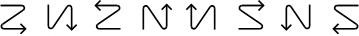

Atualmente está a ler a versão em Português do Guia do Utilizador do KOReader. Voluntários estão também a traduzir este guia para outros idiomas. Temos muitas traduções em curso, como pode ver no estado global de tradução em baixo. Por questões de usabilidade, apenas fornecemos links para os idiomas que se encontram traduzidos pelo menos 50%.
Traduzido mais de 80%
Para ver todos os idiomas atualmente em tradução e para contribuir para os esforços da tradução do guia de utilizador, por favor, visite a página de tradução do Weblate do nosso projeto.
Estado geral da tradução do guia do utilizador

Este guia foi projetado principalmente para ecrãs a cores. Se estiver a usá-lo pela primeira vez, recomendamos fortemente que leia num computador, tablet ou telemóvel, porque ver elementos da interface do utilizador destacados a cores tornará a sua vida mais fácil enquanto aprende a usar o KOReader. Claro que também pode ler isso no seu dispositivo e-ink, mas a experiência não será ótima.
Pode usar a função de pesquisa do seu navegador para encontrar um tópico ou palavra-chave específica (geralmente Ctrl + F). Se tiver uma sugestão ou pergunta relacionada a este guia do utilizador, pode escrever neste tópico de discussão do GitHub.
Partes do texto neste guia estão codificados com cores de acordo com as suas categorias:
PARTES DO KOREADER (AZUL) |
Barra de estado, Mapa do livro… |
CAMINHOS DO MENU (VERDE) |
MENU SUPERIOR /  / Highlight style / Highlight style |
APLICAÇÕES EXTERNAS (PÚRPURA) |
Calibre, Readwise, KoHighlights... |
Também temos, ao longo do guia, caixas diferentes para o informar ou avisar:
O KOReader é desenvolvido e apoiado por voluntários por todo o mundo. Também pode fazer parte deste processo:
- Corrigindo bugs e implementando funcionalidades novas
- Traduzindo o programa para o seu idioma ou melhorando uma tradução existente
- Ajudando outros com o seu conhecimento nos fóruns ou em issues e discussões do GitHub
Consulte a secção Contactos para os links.
Última atualização do guia: 2025-03-25
- O QUE PODE FAZER COM O KOREADER?
- INFORMAÇÃO BÁSICA DE UTILIZAÇÃO
- APRENDER A INTERFACE DO UTILIZADOR
- EXPLORANDO O SEU LIVRO
- A PERSONALIZAR A APARÊNCIA DO TEXTO
Apesar do seu aspeto minimalista, o KOReader é uma aplicação muito poderosa e personalizável. Esta secção funciona como um índice orientada a como fazer as coisas. Assim, se for um utilizador novo, este é o melhor lugar para começar. Aqui pode ler o que o KOReader pode fazer e aprender a como fazê-lo usando estes  links para ir para as secções referidas.
- Meio de armazenamento USB para dispositivos que o suportem 
- Armazenamento na nuvem (Dropbox/FTP/Webdav) através de contas correspondentes 
- O KOReader pode funcionar como um servidor SSH, por isso pode utilizar uma aplicação SFTP ou o seu gestor de ficheiros para transferir ficheiros diretamente 
- Com o plugin Calibre pode enviar livros diretamente da sua Biblioteca do Calibre para os seus dispositivos KOReader através de Wi-Fi 
- Com o plugin de transferência de Notícias pode transferir notícias de feeds RSS e Atom para o seu dispositivo como ficheiros HTML 
- Com o plugin Wallabag pode resgatar artigos da sua conta Wallabag (um serviço de "ler mais tarde" como o Pocket) 
- Mude o tipo de letra (incluindo os seus próprios), tamanho da letra, contraste, negrito, espaçamento de caracteres e palavras, expansão de palavras, alinhamento do texto, espaçamento entre as linhas, estrutura em colunas, margens... 
- Use os poderosos ajustes de estilo incluídos ou escreva os seus próprios para mudar como os seus livros são visualizados 
- Inverta as cores do ecrã para o modo noturno manual ou automaticamente 
- Ajuste a temperatura da cor da luz do ecrã automaticamente 
- Destaque texto com estilos e cores diferentes, coloque marcadores 
- Modo de dois toques para destaques académicos/compridos 
- Acrescente notas utilizando um teclado personalizável com diacríticos 
- Tire capturas de ecrã 
- Acompanhe as suas estatísticas de leitura incluindo o progresso de leitura, a gama horária e vistas de calendário
- Exporte as suas notas e destaques para o seu dispositivo como texto, markdown, HTML, JSON ou formato de registos do Kindle 
- Sincronize com serviços online como Joplin, Readwise, Memos, Flomo e XMNote 
- Um Navegador de Ficheiros poderoso onde pode copiar, mover, mudar o nome, criar, apagar ficheiros e pastas e executar operações em massa 
- Ver a sua biblioteca como quiser com várias vistas de detalhes e mosaico 
- Acrescente os seus livros aos seus Favoritos para acesso rápido ou crie as suas próprias Coleções com ordenação e filtragem 
- Widget de folhear para saltar rapidamente entre páginas, capítulos, e marcadores 
- Mapa do livro único para ver uma vista global do seu livro, incluindo todos os seus destaques e notas 
- Navegador de páginas para mover entre páginas como uma bobina de filme 
- Navegador de marcadores para consultar os seus destaques e notas facilmente 
- Criar um índice alternativo automaticamente ou manualmente se não gostar do que vem com o seu livro 
- Ocultar e excluir certas partes do seu livro como o Apêndice, Índice, Referências, etc. para contagens de páginas mais precisas 
- Sistema de gestos poderoso com 200+ ações permite-lhe controlar qualquer aspeto do KOReader com um toque ou deslize do dedo 
- Se tiver um teclado (interno, com fios ou ligado por Bluetooth) também pode atribuir atalhos de teclado para estas ações 
- Ou crie os seus próprios menus com as suas ações preferidas com o Menu Rápido e aceda-lhes com um toque ou deslize do dedo 
- Crie Perfis para controlar qualquer aspeto do KOReader e automatizar ações 
- Procurar no documento selecionando ou introduzindo texto (incluindo expressões regulares)
- Procurar nos seus marcadores, destaques e notas
- Consultar informação sobre o texto na Wikipédia ou em dicionários instalados e traduzi-lo com um toque longo
- Traduzir a página inteira de uma só vez entre mais de 130 idiomas
- Com o nosso sistema de plugins poderoso, até pode discutir o texto com o ChatGPT (depois de instalar o plugin) 
- O KOReader pode manter-se atualizado 
- Diminua ou desligue a luz da tela após um intervalo definido
- Defina intervalos de atualização de página para diferentes condições de leitura 
- Defina seu próprio protetor de tela com muitas opções, como imagens aleatórias, capa de um livro, leitura atual, progresso, etc.
- Defina alarmes de limite de carga da bateria para evitar descarga indevida/sobrecarga 
- Defina um alerta de uso de memória (útil para dispositivos com pouca memória) e opcionalmente reinicie o KOReader ao atingir o seguinte limite 
- Cortar margens automáticamente ou manualmente
- Refluir documentos para extrair texto e facilitar a leitura num ecrã pequeno
- Aplicar OCR a documentos sem camadas de texto, como livros antigos digitalizados 
- Diferentes tipos de zoom e direções de fluxo de página para ler facilmente documentos com várias colunas, como artigos científicos 
- Endireite automaticamente documentos inclinados, como livros antigos digitalizados 
- Guarde os seus destaques diretamente em PDFs, o que lhe permite visualizá-los sem o KOReader 
- Recurso especial de Painel de Zoom para leitura de manga 
- Configurações ajustáveis de atualização de ecrã para equilibrar perfeitamente entre sobreposição de ecrãs e velocidade 
- Adicione os seus próprios ajustes de estilo CSS para livros 
- Sistema de ajustes de utilizador que permite alterar os comportamentos principais do KOReader 
- Crie um código QR na sua área de transferência para partilhar texto e ligações com outros dispositivos
- Ver o código-fonte HTML de um documento EPUB
- Crie e edite ficheiros de texto no seu dispositivo
- Abra um emulador de terminal e execute comandos no seu dispositivo
- Veja as estatísticas de utilização de CPU, memória e bateria
O KOReader suporta ficheiros PDF, EPUB, DJVU, MOBI, CBZ, CBT, DOCX, RTF, HTML, TXT, XPS, FB2, PDB, CHM e MD. Também pode abrir ficheiros ZIP e mostrar ficheiros de imagem.
Existem muitas formas de transferir os seus documentos para o seu dispositivo. Note que pode ser necessário reiniciar o KOReader para indexar os documentos transferidos (ou atualizar o diretório se tiver o Pocketbook/Android).
Além de transferir ficheiros da mesma forma que faria com uma aplicação leitora integrada, estão disponíveis outras opções dependendo do seu dispositivo:
- Modo de armazenamento em massa USB no KOReader: Este modo está disponível para dispositivos KOBO e alguns dispositivos CERVANTES.
- Armazenamento na nuvem (Dropbox/FTP/Webdav): Para utilizar esta função deve adicionar contas para um servidor de armazenamento na nuvem através do menu apresentado abaixo. O processo é explicado através dos botões info no menu quando se adicionam contas:
- Acesso SSH/SFTP: O KOReader pode actuar como um servidor SSH, ao qual pode aceder a partir de um computador para transferir ficheiros (disponível em Kobo, Kindle, Cervantes). Pode utilizar uma aplicação SFTP (como Filezilla) ou aceder através do seu gestor de ficheiros se o seu sistema operativo o suportar. Consulte o nosso wiki para saber como fazer e veja também a caixa de aviso abaixo.
- Transferência Calibre: Com o plugin Calibre pode enviar documentos da sua Biblioteca Calibre directamente para os seus dispositivos KOReader através de uma ligação wifi. Consulte o nosso wiki para saber como fazer.
- Descarregar as notícias: Com este plugin pode descarregar entradas de notícias RSS e Atom como ficheiros HTML. Consulte wiki para saber como fazer.
- Wallabag: Com este plugin pode recuperar artigos do Wallabag, um serviço de leitura posterior baseado num servidor, como o Pocket. Consulte a página wiki para mais informações.
AVISO Tenha cuidado se utilizar a funcionalidade SSH sem palavra-passe, pois esta permite o acesso aberto ao seu dispositivo. Mas se estiver a utilizar um wifi local e ligar o wifi do seu dispositivo por um curto período de tempo, este risco é insignificante.
Os seguintes métodos estão disponíveis para aceder aos seus livros:
- Navegador de ficheiros - A secção dedicada está aqui: Utilização do navegador de ficheiros
- Favoritos - Uma lista na qual pode adicionar os seus livros mantendo-os selecionados e premindo neles no Navegador de ficheiros
- Histórico - Lista de livros que abriu
- Colecções - Listas de livros personalizadas que criou. A secção dedicada está aqui: Coleções
Pode alterar a aparência destes ecrãs a partir de:
 / Modo de visualização
/ Modo de visualizaçãoSe quiser alterar quantos itens são visíveis nestes ecrãs, veja aqui:
/ Definições / Lista detalhada de definições e mosaicoPode atribuir gestos para cada uma destas caixas de diálogo. Por exemplo, ao ler um livro, pode aceder ao seu Histórico ou Favoritos com um gesto e abrir outro livro sem passar pelo Navegador de ficheiros.
Pode pesquisar um livro no ecrã Histórico por nome do ficheiro ou metadados do livro no botão superior esquerdo do menu de hambúrgueres.
Também pode configurar o KOReader para iniciar com o ecrã Favoritos ou Histórico em vez do Navegador de Ficheiros através de:
/ Iniciar com
Na imagem acima, pode ver as posições das zonas de toque predefinidas do KOReader. Para mostrar o menu superior ou o menu inferior pode tocar nas zonas indicadas. Também pode deslizar com o dedo para baixo na zona superior para mostrar o menu superior. Em dispositivos sem ecrã tátil como o Kindle 4, pode abrir o menu inferior carregando no botão que corresponde à ação ENTER/OK.
Se pretender abrir ambos os menus ao mesmo tempo, pode definir a zona menu superior para abrir tanto o top como o menu inferior ao mesmo tempo através deste menu:
 / Toques e gestos / Activar menu
/ Toques e gestos / Activar menu
As zonas de toque de canto podem ser utilizadas para muitos tipos diferentes de gestos, incluindo TOQUE, TOQUE DUPLO, TOQUE DE DOIS DEDOS e TOQUE e SEGURE.
As zonas PÁGINA ANTERIOR e PÁGINA SEGUINTE também podem ser utilizadas para gestos de TOQUE DUPLO ao mesmo tempo.
A zona da barra de estado pode ser tocada para alternar entre os itens da barra de estado se apenas um item estiver visível. Se todos os itens estiverem visíveis, tocar irá mostrar e ocultar a barra de estado.
- Alterando o tipo de letra*:MENU SUPERIOR / / Fonte
- Aumente a fonteMENU INFERIOR /

- Aumente o negrito da fonteMENU INFERIOR /

- Inverta as cores no ecrã (branco sobre preto)MENU SUPERIOR / / Modo noturno
Também pode alterar outras opções de formatação no MENU INFERIOR para ajustar o aspeto do seu texto. Estas são apenas dicas rápidas para começar, claro. Temos uma secção completa dedicada a PERSONALIZAR A APARÊNCIA DO TEXTO
Pode controlar a luz do ecrã através deste menu. Se tiver iluminação quente (LEDs brancos normais + laranja), pode controlá-los separadamente nesta caixa de diálogo. Também pode definir um gesto para esta caixa de diálogo:
/ Luz frontalPode escolher uma capa de livro ou uma imagem personalizada como protetor de ecrã através deste menu:
/ Ecrã / Protetor de ecrãPode utilizar ficheiros JPG/PNG como protetor de ecrã (as imagens em tons de cinzento adequadamente pontilhadas ficam melhor). Transfira os ficheiros do seu computador para qualquer pasta do seu dispositivo. E escolha esta pasta como a sua pasta de proteção de ecrã através deste menu:
/ Ecrã / Protetor de ecrã / ConfiguraçõesConsulte este post no fórum Mobileread para obter informações avançadas sobre como preparar imagens de protecção de ecrã.
Se procura informações sobre atalhos de teclado, clique aqui para aceder a esta secção. Este título explica apenas a utilização do teclado.
- Toque fora do campo de introdução para fechar o teclado, toque no campo de introdução para mostrar novamente o teclado
- Deslize para cima para introduzir a versão maiúscula dessa letra (ou minúscula se já estiver no modo shift)
- Pode alterar a aparência do teclado:
MENU SUPERIOR / / Dispositivo / Teclado / Definições de teclado
- Pode selecionar mais do que um layout:
MENU SUPERIOR / / Dispositivo / Teclado / Layout de Teclado
- Pode alternar entre os layouts seleccionados tocando no ícone
 no teclado
no teclado
O teclado Koreader permite introduzir caracteres extra quando toca e mantém pressionada uma tecla. Os caracteres extra utilizados com mais frequência são mostrados abaixo. Pode tocar e manter pressionada a tecla na caixa cinzenta para obter os caracteres circundantes:

Além do pop-up de toque longo, também pode introduzir estes caracteres extra deslizando uma tecla. No exemplo abaixo, pode deslizar para cima na tecla a para introduzir um A maiúsculo ou deslizar noutras direções para introduzir os caracteres apresentados. Note que o exemplo apresentado inclui o pop-up completo para demonstração. Não precisa de abrir este pop-up, pode deslizar diretamente nas teclas. Depois de se habituar à localização dos personagens extra, poderá inseri-los muito mais rapidamente desta forma.

Se esta funcionalidade interferir com a utilização, poderá desativá-lo desmarcando:
/ Devices / Teclado / Deslize para introduzir caracteres adicionaisAlém disso, existem alguns atalhos para facilitar a manipulação de texto. Pode tocar e segurar estas teclas para ações extra:
- Seta esquerda - Desloca o cursor para o início da linha
- Seta direita - Desloca o cursor para o fim da linha
Além disso, a tecla backspace comporta-se de forma diferente quando faz gestos de deslizar sobre ela:
- Pressionar: Apagar um caractere
- Pressionar continuamente: Apague a linha inteira
- Deslizar para a esquerda: Elimina parte da palavra à esquerda do cursor
- Deslizar para cima: Apagar a palavra inteira
Para mais informações, pode consultar a página wiki relacionada.
O KOReader também integra o teclado chinês para introduzir caracteres chineses simplificados e tradicionais. Pode encontrar mais informações sobre isto no nosso wiki.
Este plug-in permite ajustar o calor da luz frontal em dispositivos com luz natural (amarela/laranja) e definir o modo noturno (cores de ecrã invertidas – texto branco sobre fundo preto) automaticamente de acordo com uma programação. Pode controlar ambos ou pode escolher o modo apenas controlo de calor ou apenas controlo do modo noturno, para que possa ajustar o outro manualmente.
Este plugin vem activado por defeito quando instala o KOReader. Se por algum motivo não estiver no menu, pode ativá-lo aqui:
Pode ajustar a temperatura da cor da luz frontal do seu ecrã automaticamente de duas formas diferentes:
Programação fixa: Neste modo, a temperatura da cor da luz frontal altera-se de acordo com a programação diária que introduziu. Este modo é estático, não tem em conta a duração da luz do dia. A programação mantém-se a mesma durante todo o ano.
Posição Solar: Esta opção calcula a posição do Sol na sua localização de acordo com as informações das coordenadas e a altitude que introduziu. A temperatura da cor da luz frontal é ajustada gradualmente de acordo com estes dados calculados da posição do Sol. Este modo é dinâmico. À medida que a duração da luz do dia muda ao longo do ano, o plugin ajusta a programação em conformidade.
Primeiro, dê uma vista de olhos a esta imagem para se familiarizar com os termos utilizados no plugin:

- Vá para o menu do plug-in: MENU SUPERIOR / / Ecrã / Aquecimento automático e modo noturno
- Precione Activar e, em seguida, em De acordo com a Programação fixa
- Volte ao menu anterior e clique em Definições de Programação fixa
- Defina o seu horário de transição de temperatura configurando aqui os horários para cada item. Consulte a imagem acima para obter uma explicação dos itens.
- Vá para o menu do plug-in:
MENU SUPERIOR / / Ecrã / Aquecimento automático e modo noturno
- Clique Activar no menu e depois De acordo com a posição solar
- Volte ao menu anterior e toque em Definições de Localização. Defina as suas coordenadas (necessário) e altitude (opcional) e dê nome à sua localização.
- Volte ao menu anterior e clique em Definições do modo noturno e de aquecimento
- Defina o seu horário de transição de temperatura configurando aqui os horários para cada item. Consulte a imagem acima para obter uma explicação dos itens.
Pode ver a Programação atual através do menu Parâmetros activos atuais.

Ao definir as percentagens de luz quente para intervalos diferentes, também pode definir este intervalo para o Modo Noturno, que inverte as cores do ecrã quando este intervalo começa. Se a sua luz frontal mínima ainda estiver muito clara ou se preferir um fundo de página escuro, pode ativar esta funcionalidade. Para ativar isto, na caixa de diálogo abaixo, clique na caixa de seleção Modo noturno e em Definir.
Ao fazê-lo, um ícone de lua aparecerá no menu junto a esse intervalo. Para desativar o modo noturno, basta desativar a caixa de seleção Modo noturno nesse intervalo.

Esta funcionalidade liga a sua luz frontal ao pôr do sol e desliga-se ao nascer do sol de acordo com os seus parâmetros atualmente ativos neste plugin. Pode substituir esta alteração ligando/desligando manualmente a luz frontal. No próximo nascer/pôr do sol, Aquecimento automático irá voltar a alterná-lo se for necessário. Pode ativá-lo selecionando o item de menu Luz frontal desligado durante o dia neste plugin.
Se pretende que o calor da luz frontal mude rapidamente em vez de uma mudança mais gradual:
- Defina o modo para Programação fixa seguindo as instruções acima
- E ajuste as definições seguindo a imagem abaixo:

Como pode ver nas definições acima, existe apenas uma diferença de um minuto entre a transição dia-noite. Assim, o calor do ecrã vai de 0 a 100 (ou inverso) em apenas um minuto. Pode aumentar esta separação de tempo para prolongar a duração da transição.
O KOReader tem uma interface simples, principalmente a preto e branco, porque os gradientes e os diferentes tons de cinzento podem causar flashes e efeitos fantasma nos ecrãs de tinta eletrónica, o que pode prejudicar a experiência de leitura.
O KOReader possui 2 interfaces principais: ecrã de leitura e explorador de ficheiros. Explicaremos aqui o ecrã de leitura. Explorador de ficheiros é explicado nesta secção do guia.
ECRÃ DE LEITURA tem dois menus:
- MENU SUPERIOR inclui itens relacionados com a utilização geral do KOReader. Onde pode aceder aos seus livros, preferências do KOReader, plugins etc.
- MENU INFERIOR concentra-se nas opções para formatação de documentos, como a espessura/tamanho da letra, o espaçamento entre linhas, etc. Ao ajustar a aparência do texto, irá interagir principalmente com o MENU INFERIOR.


A imagem acima mostra os elementos que pode ver no ecrã do leitor ao ler um livro:
- Ícones indicadores: Estes ícones informam sobre determinados processos em curso e estados. Poderá ver-los no canto superior esquerdo do ecrã durante determinadas operações. Normalmente são mais pequenos, mas aqui mostramos-los maiores para maior clareza. O próximo capitulo explica estes ícones indicadores em detalhe: Ícones indicadores
- Barra de estado:Esta área é altamente configurável onde pode ver diversas informações sobre o seu livro e o KOReader. Clique aqui para ir para a secção: Barra de estado
- Barra de estado alternativa: Para além da barra de estado predefinida, temos uma barra de estado alternativa que aparece no topo da página se a ativar. Clique aqui para obter detalhes: Barra de estado
- Números de páginas de referência: se a editora do seu livro tiver incluído os números de página da versão impressa do livro, irá vê-los assim. Clique aqui para mais informações: Numeração de páginas e números de páginas de referência
- Tipos de destaque: pode ver aqui os diferentes tipos de destaque. Além disso, pode fazer destaques coloridos se o seu dispositivo tiver um ecrã adequado. Clique aqui para ir para a secção: Marcadores, Destaques e Notas
- Marcador de notas: o ícone do marcador de notas aparece quando adiciona uma nota a um destaque. Temos diferentes tipos de marcadores de notas. Clique aqui para mais informações: Marcadores, Destaques e Notas
O KOReader possui alguns indicadores para o informar sobre determinados processos em curso e estados, como pode ver na imagem acima. Pode ver-los no canto superior esquerdo do ecrã durante determinadas operações.
   
|
Ícones de renderização parcial Este grupo de ícones pertence ao procedimento de renderização parcial e provavelmente verá estes ícones com mais frequência do que os outros. Estes ícones são visiveis quando altera as definições no menu inferior. Esta funcionalidade permite visualizar as alterações na aparência do texto muito mais rapidamente, renderizando apenas o capítulo atual em vez do livro inteiro. Além disso, rodar a orientação do ecrã é agora muito mais rápido graças a ela. Esta funcionalidade está ATIVADA por predefinição. Se necessário, pode ser desativado para cada livro individualmente (com um toque) ou globalmente (com um toque longo) em: MENU SUPERIOR /
/ Documento / Habilitar renderização parcialApós confirmar as suas alterações o livro todo tem de ser renderizado novamente, por isso isto é um processo de múltiplos passos. Estes ícones mostram o estado do processo de renderização como explicado abaixo: |
|
Neste estado, o documento é parcialmente renderizado. A contagem de páginas, a informação de rodapé e outras informações são imprecisas. Pode ver o comportamento das alterações às definições e ajustá-las ainda mais. Também pode virar páginas e saltar links. |
|
Uma renderização completa está a acontecer em fundo. Pode ainda virar páginas, saltar links, alterar configurações. |
|
A renderização completa foi feita, mas ainda não foi aplicada porque o KOReader está à espera que fique suspenso para recarregar o resto do livro (suspenso=não interargir com o dispositivo). Pode ainda virar páginas, saltar links, alterar configurações. |
|
|
Esteve suspenso durante algum tempo, então o KOReader está a recarregar o documento inteiro. Neste passo o KOReader é bloqueado para evitar a interacção. |
 |
Ícone de Destaque Este ícone aparece quando se encontra no modo de seleção e destaque. O KOReader possui um modo de destaque adicional que permite iniciar um destaque e virar as páginas, para fazer destaques longos que podem abranger várias páginas. Pode ler sobre isso na secção MARCADORES, DESTAQUES E NOTAS deste guia. Quando inicia um destaque neste modo, este ícone é mostrado no canto para o lembrar que ainda está no modo de destaque. Desaparece quando termina o destaque selecionando o final da passagem ou quando cancela o destaque (tocando novamente no início do seu destaque ou neste ícone de destaque). |
 |
Ícone de bola Pokémon Este ícone aparece quando pressiona uma palavra durante muito tempo (intencionalmente ou acidentalmente). O KOReader tem um menu normal de pressão longa. E um menu adicional de pressão demasiado longa quando mantém o dedo pressionado durante mais de 3 segundos. Este ícone significa que ativou este menu de toque longo. |
 |
Ícone do modo Folhear Este ícone aparece quando toca no canto superior esquerdo se:
Este modo apresenta temporariamente a página inteira sem cortes, dimensionada para caber no ecrã. Pode virar as páginas neste modo. Para sair deste modo, toque neste ícone. |
Tipos de documentos como epub, mobi, html não têm, naturalmente, números de página fixos porque são documentos refluíveis. Ou seja, estes documentos podem ser ajustados de acordo com o tamanho do ecrã e orientação do dispositivo (ao contrário dos pdfs ou djvu por exemplo, que têm um tamanho de página fixo).
Se aumentar o tamanho da letra de um documento refluível, a contagem de páginas também aumentará, porque agora caberá menos texto numa única página. Por vezes, isto causa problemas porque um destaque que fez na página 38 pode estar na página 42 após o ajuste da fonte.
O KOReader suporta a funcionalidade Números de página de referência, que permite aos editores incorporar números de páginas de livros impressos diretamente na versão do e-book. Quando ativa esta funcionalidade, o KOReader não calcula os números das páginas sozinho. Em vez disso, mostra os números de páginas incorporadas do editor. Isto significa que o número da página que vê na barra de estado corresponde à versão impressa do livro.
Benefícios dos números de pagina referência:
- Os números das páginas de referência permitem citações precisas, combinando os números das páginas que se encontram nas versões impressas.
- Os números de página de referência podem ajudar na navegação, especialmente para os leitores familiarizados com a versão impressa de um livro. Pode ajudá-lo a encontrar passagens ou citações específicas mais facilmente na versão digital.
- Uma vez que os livros digitais podem ser lidos em vários dispositivos e plataformas, cada um com o seu próprio tamanho de letra e definições de visualização, os números de página apresentados podem variar significativamente. Os números de página de referência fornecem um ponto de referência consistente ao ler o mesmo livro ao mesmo tempo em diferentes dispositivos, como o leitor eletrónico e o telefone.
Pode ativar esta funcionalidade a partir de:
 / Páginas de referência / Utilizar números de página de referência
/ Páginas de referência / Utilizar números de página de referênciaSe também marcar a opção Mostrar etiquetas de páginas de referência na margem no mesmo menu, estes números de página são mostrados ao lado do texto numa fonte pequena.
Note que este menu só aparece se existirem Números de páginas de referência incorporados no seu livro.
O KOReader tem duas barras de estado, uma barra de estado inferior que está activa por defeito. E uma barra de estado alternativa que aparece no topo da página se a activar. Esta barra de estado alternativa apenas está disponível em documentos refluíveis (epub, html, docx, rtf, txt…).
Barra de estado inferior é a mais recente e é mantida ativamente. Barra de estado alternativa é o remanescente das versões anteriores do KOReader, por isso, não lhe estamos a adicionar novas funcionalidades. Mas ainda pode ativar esta barra de estado alternativa se a considerar útil. Pode habilitá-la em:
/ Barra de estado alternativaPode configurar a Barra de estado alternativa neste menu:
/ Barra de estado / Alternativa à barra de estadoAs instruções no resto desta secção são para a barra de estado inferior.
Pode configurar a barra de estado inferior neste menu. Sinta-se à vontade para explorar o submenu DEFINIÇÕES para personalizar a sua barra de estado como desejar.
/ Barra de EstadoExistem muitos itens que pode mostrar na barra de estado. Mas, por defeito, apenas um é mostrado de cada vez e é necessário tocar na barra de estado para alternar entre eles. Se quiser mostrar todos os itens de uma só vez, ative-o aqui:
/ Barra de estado / Configurar itens / Mostrar todos os itens seleccionados de uma só vezSe tiver ativado a opção acima, não poderá ocultar a barra de estado tocando nela. Se quiser ocultá-la, deve atribuir aqui um gesto para ocultar/mostrar a barra de estado:
Organização dos itens da barra de estado:
/ Barra de estado / Configurar itens / Organizar itens na barra de estadoExiste um item especial na barra de estado chamado Texto personalizado. Este item pode mostrar um texto escolhido na barra de estado. Também pode utilizar esta funcionalidade para criar um separador entre os itens da barra de estado, como pode ver no exemplo abaixo:

- Primeiro ative esta opção com um toque curto neste menu
MENU SUPERIOR / / Barra de estado / Texto personalizado: ‘KOReader’
- Mantenha-o pressionado para abrir as suas definições. Introduza um caractere "espaço" na primeira caixa e introduza o número de repetições na segunda caixa, que determinará a largura do seu separador.
Pode escolher outro caractere como separador. Também pode mover este item como outros itens da barra de estado para alterar a sua ordem e ajustar os seus grupos.
A barra de progresso na barra de estado mostra normalmente o seu progresso no livro. Mas também pode mostrar o seu progresso no capítulo atual. Isto pode ser útil, por exemplo, se um livro tiver muitos capítulos curtos. Neste caso, pode ser difícil ver o seu progresso no capítulo atual, pelo que a barra de estado do capítulo pode ser mais informativa. Pode ativar o recurso neste menu:
/ Barra de Estado / Barra de Progresso / Mostrar barra de progresso do capítuloAlém disso, pode atribuir um gesto para alternar entre as barras de progresso normal e de capítulo. Pode encontrar esta ação em:
Aqui daremos apenas uma visão geral dos itens na estrutura do menu superior para que se possa familiarizar com o menu. Informações detalhadas estão disponíveis nas secções relacionadas deste guia.

- NAVEGAÇÃO: Este menu contém itens que lhe permitem navegar no livro que está a ler no momento. Índice, marcadores, mapa do livro...
- CONFIGURAÇÕES: Este menu contém itens que permitem alterar o aspecto do seu livro. Definições de tipos de letra, ajustes de estilo...
- DEFINIÇÕES: Este menu contém definições para o KOReader e para o seu dispositivo. Definições de tinta electrónica, luz, gestos...
- FERRAMENTAS: Este menu contém plugins que podem expandir a funcionalidade do KOReader.
 PESQUISA: Este menu contém itens relacionados com a pesquisas e procuras. Pesquisa de texto, dicionário, tradução, Wikipédia...
PESQUISA: Este menu contém itens relacionados com a pesquisas e procuras. Pesquisa de texto, dicionário, tradução, Wikipédia...- NAVEGADOR DE FICHEIROS: Este botão abre o navegador de ficheiros que é a interface para gerir a sua biblioteca.
 PRINCIPAL: Este menu contém ferramentas para aceder aos seus livros como histórico, favoritos, coleções. Além disso, os itens informações do livro, atualizar e sair estão neste menu.
PRINCIPAL: Este menu contém ferramentas para aceder aos seus livros como histórico, favoritos, coleções. Além disso, os itens informações do livro, atualizar e sair estão neste menu.

Modo de visualização: Se mudar para o modo contínuo, pode fazer scroll no documento como uma página Web. Este modo é mais adequado para tipos de ecrã que não sejam e-ink (LCD, OLED). No modo contínuo perde as margens superior e inferior e o texto pode ser cortado na primeira e última linha do ecrã. Para resolver este problema pode ativar a Sobreposição de páginas:
/ Sobreposição de páginasModo de renderização: Esta opção determina a forma como o seu documento será renderizado pelo KOReader. O padrão é WEB e geralmente não precisa de alterar esta definição. Quando um livro (ou página web guardada) é demasiado complicado (larguras ou margens especificadas, margens negativas, flutuações, etc.) e o layout tem mau aspeto ou transborda o ecrã, pode tentar outros modos de renderização.
Zoom (dpi): Esta definição pode ser considerada um fator geral de zoom para o documento (exceto o tamanho da letra). A 96 dpi (que é a definição predefinida), as imagens do documento são renderizadas nas suas dimensões originais. Basicamente irá utilizar esta definição se quiser aumentar as imagens sem aumentar o texto.

As definições de Espaçamento e expansão de palavras estão relacionadas e determinam o aspeto do seu texto quando se justifica. Ao justificar o texto, é adicionado espaço entre as palavras para que ambas as margens de cada linha fiquem alinhadas. Como a contagem de palavras nas linhas não é sempre igual, no alinhamento justificado, o texto é comprimido ou expandido para preencher a linha.
Espaçamento entre palavras: quanto os caracteres de espaço numa linha de texto podem ser comprimidos para acomodar mais palavras. Esta definição não afeta as palavras, apenas altera o espaço entre elas.
Expansão de palavras: Se tiver muito espaço em branco numa linha, o quanto desse estaço pode ser distribuído nas palavras, expandindo-as. Esta definição afeta a aparência das palavras. Se não quiser que as suas palavras se expandam, defina como none.
Pode experimentar diferentes definições até que o texto lhe pareça agradável e, em seguida, defini-las como predefinição através das suas respetivas caixas de diálogo.

Contraste e espessura da fonte são duas opções que pode utilizar para tornar o seu texto mais carregado (ou mais claro). Pode obter a mesma aparência com qualquer uma destas opções, mas utilizar métodos diferentes para a alcançar. Pode, também, usar os dois ao mesmo tempo.
As diferenças entre eles pode ser resumida em:
+ Não altera a largura da letra, o comprimento do livro mantém-se
+Não é necessário renderizar novamente o documento, mais rápido
- Pode ficar mal em ecrãs LCD ou com baixo DPI
+ Utilizará tipos de letra com espessura adequada se os tiver instalados
+ Fica melhor em ecrãs LCD ou com baixo DPI
- Nova renderização das fontes necessária, mais lento
Sugestão de fonte ajusta o seu texto para uma legibilidade máxima de acordo com a grelha de pixéis do ecrã. O nativo utiliza instruções de dicas internas da fonte, o auto utiliza o algoritmo de dicas do FreeType. Auto é uma escolha mais segura porque os ficheiros de fontes que instalou podem ter instruções de dicas problemáticas. Além disso, auto lida melhor com texto CJK. Pode experimentar diferentes configurações para ver qual delas fica melhor no seu dispositivo.
Kerning de tipos de letra ajusta o espaçamento entre letras para obter um resultado visualmente agradável. Por definição é a melhor opção, pode ser mais lenta ao abrir ficheiros (dependendo do seu dispositivo) mas tem melhor suporte para ligações (veja a imagem abaixo para um exemplo), juntou glifos em árabe e alguns outros scripts. Se o seu dispositivo for lento, pode tentar bom, que é mais rápido e ainda pode parecer correto com texto em escrita latina ocidental.


Barra de Estado Alternativa ativa uma barra de estado alternativa que apenas está disponível em documentos refluíveis (EPUB, HTML, DOCX, RTF, TXT…). Depois de a ativar aqui, pode configurar barra de estado alternativa a partir de:
/ Barra de estado / Alternativa à barra de estadoEstilo incorporado e fontes incorporadas determinam se os estilos e fontes incorporados da editora no documento serão utilizados (ou ignorados) para renderizar o documento. Estes são interruptores gerais de ligar/desligar. Pode obter ajustes mais precisos no seu documento através de:
/ Ajustes de EstiloEscala de imagens determina a forma como as imagens do seu documento são renderizadas. Melhor parece mais agradável, mas é mais lento.
A interface de utilizador e as opções do KOReader podem mudar dependendo do tipo de ficheiro que abre. Existem duas categorias principais de documentos:
- Documentos com layout fixo (pdf, djvu, imagens...)
- Documentos refluiveis (epub, html, docx, rtf, txt…).
O KOReader possui muitas funcionalidades, pelo que o seu sistema de menu reflete essa complexidade. Temos uma funcionalidade de Pesquisa de menu para encontrar itens de menu rapidamente. Se se lembra do nome de um item de menu, mas não se lembra onde está, pode utilizar esta funcionalidade:
/ Ajuda / Pesquisar menuAlém disso, pode atribuir esta funcionalidade a um gesto ou adicioná-la ao seu Menu Rápido para um acesso mais rápido.
No menu inferior, se tocar e segurar o nome de uma opção, pode ver a sua explicação. |
|
Pode mudar a linguagem através de: MENU SUPERIOR /
/ Idioma |
|
Se pretender alterar o tamanho da interface do utilizador, existe uma definição de DPI para isso: MENU SUPERIOR /
/ Ecrã / DPI do ecrãPode escolher um valor no menu ou selecionar Dpi personalizado para introduzir um valor para o ajuste: DPI mais elevado = Interface maior. Note que também existe uma definição de Zoom (dpi) na barra inferior. Este está relacionado apenas com os documentos. Pode encontrar a explicação na próxima secção. |
Se tocar e segurar uma opção ou item de menu (espessura da fonte, espaçamento entre linhas, etc.), pode definir o seu valor como PREDEFINIDO. O novo valor só será aplicado aos livros abertos a partir da seleção do mesmo. Os livros abertos anteriormente manterão as suas definições. Pode identificar os valores predifinidos com uma estrela (★) no menu ou com uma borda preta à volta dos indicadores, como mostra abaixo: 

|
Pode fechar caixas de diálogo de ecrã inteiro (Histórico, Índice, Leitura de estatísticas etc.) deslizando para baixo. (Exceto a janela Marcadores, para esta pode utilizar qualquer gesto de deslizamento para a fechar) |
Pode fazer uma captura de ecrã deslizando o dedo prelongadamente e na diagonal ou tocar nos cantos diagonais opostos. Pode utilizar este segundo gesto, por exemplo, ao visualizar uma imagem. Além disso, se o seu dispositivo tiver um teclado, pode fazer uma captura de ecrã com o atalho Alt + Shift + G. |
Se pretender abrir uma página aleatória de um livro, temos uma ação Saltar para uma página aleatória que pode atribuir a qualquer gesto. Encontra-se na categoria Leitor do Gestor de Gestos. |

Nas janelas que contenham botões de seta de ajuste como a acima, pode manter premidos os mesmos para alterar o valor em incrementos maiores. Pode fechar este tipo de caixa de diálogo (não em ecrã inteiro) tocando fora da janela. Pode mover este tipo de diálogo segurando o título da janela e arrastando. Pode tornar este tipo de caixa de diálogo semitransparente tocando e mantendo premido o título da janela (quando quiser ver o texto por baixo da janela enquanto ajusta um valor). |
Criar novas pastas - Em situações em que é necessário escolher um local (armazenamento na nuvem, mover para arquivo de plugins, plugin de exportação), o KOReader apresenta um ecrã que se parece com o nosso Navegador de Ficheiros. Se pretende criar uma nova pasta ao escolher:
|
O KOReader suporta pesquisa no dicionário em EPUB e documentos PDF/DJVU digitalizados. Para ver a definição ou tradução do dicionário, basta tocar e segurar uma palavra. Premir e manter uma palavra abre uma caixa de diálogo onde também pode pesquisar mais ocorrências na seleção do documento ou procurá-la na Wikipédia. |
Se pretender verificar a data actual, pode tocar no relógio no MENU SUPERIOR. |
O KOReader possui três tipos de scroll por toque. Pode aceder a eles em:
/ Toques e gestos / Scroll- Scroll clássico: Este modo funciona exatamente como o scroll do seu telemóvel/tablet.
- Scroll Turbo: Este modo permite deslizar mais rapidamente do que o scroll clássico. Além disso, pode percorrer várias páginas sem levantar o dedo. A quantidade de scroll é proporcional à distância que move o dedo após iniciar a interação.
- Scroll ao largar: Este tipo de scroll é mais adequado para ecrãs e-ink. Porque, ao contrário de outros tipos de scroll, este modo não atualiza a sua página continuamente durante a interação. Funciona como o Scroll clássico mas os passos intermédios não são mostrados. Portanto, quando se faz o deslize com o dedo e depois se solta, a página salta para essa posição. Isto é especialmente útil para reposicionar e ajustar a visualização se o seu livro contém imagens ou tabelas e pretende ver tudo.
Esta funcionalidade útil funciona como o botão Voltar do seu browser. Quando navega para outra parte do livro utilizando o widget de navegação, lista de marcadores, mapa do livro etc. o KOReader lembra a localização anterior. Isto é útil, por exemplo, se carregar num link ou referência interna, com um toque pode voltar ao lugar de onde veio. Pode aceder a esse recurso em:
/ Voltar ao local anteriorAlém disso, também pode avançar, no mesmo menu. Esta característica é atribuída ao gesto de deslizamento múltiplo . Pode atribuir isto a outro gesto se desejar (como tocar num canto) ou adicioná-lo ao seu Menu Rápido.
O KOReader executa normalmente uma actualização completa nas páginas que contêm imagens (que pode observar como um flash preto). O motivo é eliminar os resíduos da página anterior. Mas isto pode não ser necessário dependendo do seu dispositivo e das preferências pessoais. Pode desativar este comportamento de atualização automática aqui:
/ Ecrã / Definições de E-ink / Taxa de actualização total / Atualizar sempre páginas com imagensAlém disso, pode desativar o flash preto da interface do utilizador aqui se isso o incomodar:
Existem diferentes formas de navegar pelo seu documento no KOReader, cada um com os seus próprios pontos fortes. Pode usar:
- Widget de navegação
- Mapa do Livro
- Navegador de Página
Widget de Navegação é uma ferramenta de navegação muito funcional. Pode usá-lo para:
- Vá para qualquer parte do seu livro tocando diretamente na barra de progresso ou introduzindo o número da página
- Navegue entre os capítulos
- Navegue entre marcadores
Como abrir a navegação rápida:
- Com um toque longo na Barra de Estado na parte inferior do ecrã
- Deste menu: MENU SUPERIOR / / Leitura Superficial do Documento
- Pode assignar um gestor para isso
- Pode adicioná-lo ao seu Menu Rápido
Primeiro, vamos dar uma vista de olhos ao diagrama abaixo. Verá que temos dois Widget de Navegação rápida diferentes. Ambos com as mesmas funções, apenas o tamanho é diferente:
- WIDGET NAVEGAÇÃO COMPLETA: Este é o widget de navegação padrão que verá ao instalar o KOReader. É maior do que o widget de navegação compacta, por isso, os botões são mais confortáveis de premir. Este widget abre no centro do ecrã.
- WIBGET DE NAVEGAÇÃO COMPACTO: Esta é a versão mais simplificada do widget de navegação padrão. Pode ser mais útil se estiver a fazer destaques, por exemplo. Como este widget é mais pequeno e abre na parte superior ou inferior do ecrã, não obstrui tanto a página como o widget padrão.
Se pretender utilizar o widget de nevegação compacta, pode fazê-lo escolhendo Topo ou Fundo neste menu:
DICA Ambos os widgets de navegação são móveis. Pode movê-los premindo uma área vazia do widget e arrastando. Além disso, pode tornar estas caixas de diálogo semitransparentes mantendo pressionada uma área vazia do widget. Mas a semitransparência é acionada apenas na sua posição inicial. Uma vez movido, se o pressionar continuamente isso move-o de volta para a posição inicial.
Voltando ao diagrama. Pode ver que em alguns botões existem duas descrições em cores diferentes:azul e laranja. Isto significa que este botão tem duas funções: uma ação de toque e uma ação de manter premido. Se premir normalmente, executará a função AZUL. Se pressionar durante mais tempo, executará a função LARANJA.

Explicações dos itens numerados (pressão longa a negrito):
- Ir para o início do capítulo anterior / Saltar para a primeira página do livro
- Ir para o marcador anterior / Ir para o primeiro marcador do livro
- Marcar página atual/ Abrir dialogo de Marcadores
- Ir para o marcador seguinte / Saltar para o último marcador do livro
- Ir para o início do capítulo seguinte / Saltar para a última página do livro
- Recuar (-) ou avançar (+) este número de páginas
- Este número mostra o número da página atual. Se tocar nele, será aberta uma caixa de diálogo, permitindo-lhe introduzir um número da página para onde quer ir ou percentagem para ir diretamente. Se manter premido, voltará à página onde abriu o widget de navegação. Isto é útil, por exemplo, se quiser verificar outra parte do livro rápidamente e voltar à leitura a partir do ponto onde parou.
- Esta é a barra de progresso. As linhas finas marca o início dos capítulos. Pode tocar na barra de progresso para ir para essa parte do livro. As setas pequenas são setas de início de sessão que marcam o local onde começou a ler este livro na sessão atual. Estas setas são repostas quando altera o livro.
- Este botão no widget de navegação compacto funciona da mesma forma que a função de manter premido o item número 7. Leva-o de volta à página onde abriu o widget de navegação. Isto é útil, por exemplo, se quiser verificar rapidamente alguma outra parte do livro e voltar à leitura a partir do ponto onde parou.
DICA Se pretender abrir uma página aleatória de um livro, temos uma acção Saltar para uma página aleatória que pode atribuir a qualquer gesto. Encontra-se na categoria Leitor do Gestor de Gestos.
O KOReader pode mostrar os limites dos capítulos dos seus documentos no WIDGET DE NAVEGAÇÃO e na BARRA DE PROGRESSO.

Se o seu documento tiver muitos títulos, as marcas dos capítulos podem parecer apinhadas, como no exemplo acima. Pode alterar os tipos de titulo apresentados no índice através:
/ Definições / Barras de progresso
Pode também utilizar este índice reduzido para:
- títulos dos capítulos (se for apresentado na barra de estado)
- navegação por capítulo
- Estimativas de tempo de leitura restante
Estas opções estão no mesmo menu.
Se o seu documento não tiver Índice, pode ativar ÍNDICE ALTERNATIVO. Quando esta definição estiver ativa, o KOReader criará um Índice a partir dos títulos (se disponíveis) ou a partir de ficheiros HTML individuais no EPUB. Mantenha premido para obter informações adicionais:
/ Definições / Índice alternativoPode encontrar mais informações sobre as ferramentas de índice disponíveis no KOReader nesta secção relevante do guia: FERRAMENTAS DE ÍNDICE
O mapa do livro é uma funcionalidade poderosa e exclusiva do KOReader que pode ser muito útil para obter uma visão geral de um livro. Por exemplo, se estiver a ler um livro de forma não linear, saltando algumas partes para as ler mais tarde, seria difícil acompanhar o seu progresso. O Mapa do Livro pode mostrar-lhe rápidamente que partes do livro já leu.
Além disso, pode:
- Veja quanto tempo passou em cada página (se o plugin Leitura de estatísticas estiver ativado)
- Verifique que páginas têm marcadores, destaques e notas
- Navegue diretamente para qualquer parte do livro com o WIDGET DE NAVEGAÇÃO RÁPIDA
Pode aceder ao Mapa do Livro através do menu e também pode atribuir um gesto para acesso rápido:
/ Mapa do LivroQuando abre o Mapa do Livro pela primeira vez enquanto lê um livro, este estará no modo Visualização em grelha, ajustando todos os capítulos num único ecrã para fornecer a melhor visão geral inicial do conteúdo do livro. Para obter informações detalhadas sobre a sua utilização, toque no ícone de informações no canto superior esquerdo. Pode fechar o Mapa do Livro tocando em X no canto superior direito ou com qualquer gesto de deslizamento múltiplo (CIMA-BAIXO, ESQUERDA-DIREITA etc.).

- Limites do capítulo
- As barras pretas indicam páginas lidas. Barras mais altas significam mais tempo passado na página.
- O ícone do Marcador, como o nome indica, mostra as páginas marcadas.
- Ícone quadrado com linhas mostra paginas com destaques.
- Ícone do lápis mostra as páginas com anotações.
- Os números circulados mostram as suas localizações anteriores. Ao escolher Voltar ao local anterior no menu, voltará a cada um por ordem.
- Triângulo mostra a página atual.
- A barra lateral mostra o nivel atual de visão.
- A barra de vertical mostra o nível atual de largura da página.
Pode personalizar o Mapa do Livro alterando estas opções:
- Experimente primeiro deslizar o dedo para a ESQUERDA e DIREITA ao longo da margem inferior do ecrã para alterar a largura das colunas que indicam as páginas e observe como isso altera a escala do mapa.
- De seguida, tente deslizar PARA CIMA e PARA BAIXO ao longo da margem esquerda do ecrã para alterar a profundidade do título do capítulo e mudar para a Visualização plana. Veja exemplos abaixo.
Além da Visualização em grelha acima, aqui pode ver a Visualização plana à esquerda e a Visualização em grelha sem títulos de capítulo à direita. Observe a mudança da barra vertical esquerda entre as visualizações. Se quiser voltar à visualização predefinida, pode manter pressionado o ícone de informação no canto superior esquerdo.


Ao tocar no ícone do menu no ecrã Mapa do Livro, verá o menu acima. As opções do menu são explicadas abaixo:
- Sobre o mapa do livro: Breve explicação sobre a utilização do mapa do livro e descrições dos ícones.
- Gestos disponíveis: Gestos que pode utilizar para alterar as definições do Mapa do livro em vez de utilizar este menu.
- Navegador de páginas ao tocar: Se esta opção estiver seleccionada, quando toca numa página do mapa do Livro, é aberto o Navegador de páginas. Este mostra uma visão geral da área selecionada. Se desativar esta opção, um toque no mapa do livro leva-o diretamente para essa página. Mas lembre-se, dependendo de fatores como o tamanho do ecrã, a sensibilidade do ecrã táctil, a precisão do toque, etc., pode acabar em páginas adjacentes.
- Alternar visualizações atuais/iniciais: Se tiver personalizado a visualização do mapa do livro, tocar aqui alterna entre a visualização predefinida e a visualização personalizada.
- Alternar visualizações em grelha/planas: Alternar visualização entre capítulos separados ou capítulos contínuos.
- Níveis de capítulo: Altere a profundidade dos níveis de capítulo/subcapítulo.
- Largura do slot de página: Torne cada slot de página mais largo ou mais estreito.
- Marcadores de 10 páginas: À medida que aumenta este valor, primeiro irá adicionar marcadores a cada 10a página, depois torná-los maiores e, eventualmente, adicionar marcadores a cada 5a página.
O Navegador de páginas pode ser utilizado para navegar entre páginas como num álbum de fotografias, mostrando as miniaturas das páginas em grelha. Pode abrir o Navegador de páginas tocando no Mapa do livro ou no menu. Também pode atribuir um gesto para facilitar o acesso.
/ Navegador de páginas
A utilização do Navegador de páginas é explicada abaixo. Também pode tocar no icon do menu de hambúrgueres no canto superior esquerdo neste ecrã para ver estas explicações. Um toque longo no mesmo botão adiciona/remove títulos de capítulos da faixa inferior.
- Deslize esquerda/direita sobre esta margem superior para aumentar/diminuir o número de colunas.
- Deslize cima/baixo sobre a margem esquerda para aumentar/diminuir o número de linhas.
- Deslize na área das páginas para mover as páginas visualizadas. cima/baixo para percorrer uma linha (2 páginas no exemplo), esquerda/direita para percorrer um ecrã (4 páginas no exemplo).
- Toque em qualquer página para a abrir em modo leitura.
- Na área inferior, tocar numa página concentra a visualização em miniatura dessa página. Deslizar esquerda/direita irá saltar uma largura de faixa.
- Os ícones na área inferior são os mesmos utilizados no Mapa do livro e explicados nessa secção.
O mapa do livro e o navegador de páginas têm um tema alternativo com um esquema de sombreado diferente que pode ativar no menu de hambúrguer. Este tema utiliza cores alternadas para os títulos dos capítulos, de modo a que os limites dos capítulos sejam mais visíveis no Mapa do livro e no Navegador de páginas. Mas o uso da cor cinzenta neste tema requer piscar para preto, pelo que pode distrair alguns utilizadores. Pode experimentar os dois e usar o que quiser.
Alguns dos livros digitais que encontra podem não ter um índice adequado (Índice). Dependendo da preparação do livro, pode deparar-se com estes problemas:
- Não há índice no livro, pelo que não pode saltar entre capítulos ou ver os tempos de leitura restantes
- Existe um índice, mas não é muito útil porque contém títulos de capítulos errados ou em falta
O KOReader tem algumas características que pode utilizar ao ler livros com um índice problemático.
Note que Índice alternativo não está disponível em documentos de layout fixo como PDF, DJVU etc. porque requer tags HTML para criar um Índice. As funcionalidades Índice personalizado e Fluxos ocultos personalizados estão disponíveis em todos os tipos de ficheiro.
A primeira funcionalidade é o Índice alternativo que pode encontrar em:
/ Definições / Índice alternativoTabela de Conteúdos alternativa tenta criar a ToC a partir de cabeçalhos no seu livro (H1 para H6 etiquetas nos ficheiros HTML no seu EPUB).Se o seu livro não contém cabeçalhos, tentará construir uma ToC a partir dos fragmentos do documento (ficheiros individuais HTML no seu livro EPUB) que apontarão para o começo de cada ficheiro.
Pode escolher quais os níveis de título a incluir (ou ignorar) no seu Éndice neste menu:
/ Ajustes de Estilo / Diversos / Dicas para Índice alternativoA funcionalidade de índice personalizado permite-lhe criar o seu próprio sumário a partir das partes selecionadas do seu livro. Este índice pode conter apenas um nível, pelo que não pode ter subcapítulos ao utilizar esta funcionalidade. Para criar o seu próprio índice, primeiro ative:
/ Definições / Índice PersonalizadoDepois de ativar esta funcionalidade, novos itens de menu serão adicionados à interface do utilizador, permitindo selecionar os seus capítulos. Pode adicionar um capítulo ao seu índice a partir de dois lugares:
- A partir de um Destaque: enquanto lê um livro, seleccione o texto como se o estivesse a destacar ou mantenha uma palavra pressionada. No menu de pop-up verá o item Iniciar capítulo índice. Ao premi-lo, verá uma caixa de diálogo a solicitar que introduza o título do capítulo. O texto que selecionou já estará inserido na caixa de diálogo. Edite o seu título se necessário e prima criar.
- No navegador de páginas: Abra o Navegador de Páginas através
/ Navegador de páginasMantenha pressionada a miniatura da página que pretende que seja o início do capítulo e seleccione o item Iniciar capítulo Índice no menu de pop-up. Verá um diálogo a solicitar que insira o título do capítulo.
Quando terminar de criar o seu índice e não quiser ver estes botões extra, pode desativá-los desmarcando:
/ Definições / Recursos de layout personalizado / Modo de ediçãoA criação deste índice não irá alterar o índice original que acompanha o seu livro. Pode limpar o seu Índice personalizado neste mesmo menu (caso pretenda criar um novo). E pode desativar esta funcionalidade completamente da mesma forma que a ativou, se quiser voltar ao índice original. Note que se desativar esta funcionalidade após criar um índice personalizado para voltar ao original, o seu índice personalizado não será eliminado. Pode ainda alternar entre o índice original e o índice personalizado.
Alguns livros ou documentos podem conter notas de rodapé longas ou secções bibliográficas. Como, por exemplo, um livro científico com 250 páginas, mas as últimas 50 páginas são Apêndices, Índice e Referências. Normalmente estas páginas são incluídas na barra de progresso e nos cálculos do tempo de leitura, pois fazem parte do livro. Mas geralmente estas secções existem como referência e não são lidas completamente, pelo que pode querer eliminá-las para tornar a contagem de páginas restantes e as estimativas de tempo mais precisas. Ou talvez tenha um livro de antologia que contém algumas histórias que já leu. A funcionalidade Fluxos ocultos personalizados do KOReader permite-lhe eliminar estas partes do seu livro.
Vêja a imagem para uma visão geral do processo. As etapas serão explicadas após a imagem:

Como eliminar uma secção criando um fluxo oculto:
- Vá para a primeira página da secção que pretende excluir
- Abra o Navegador de Páginas através de:
MENU SUPERIOR / / Navegador de páginas
- Mantenha premida a miniatura da página que pretende que seja o início da secção excluida e selecione o item Iniciar fluxo oculto aqui no menu de pop-up.
- Verá que as páginas iniciadas na sua seleção têm agora um fundo cinzento.
- Agora vá para a última página da sua secção excluida. Pode navegar até lá a partir do Navegador de páginas ou utilizando outras formas, como Mapa do livro, widget de navegação rápida etc.
- Quando estiver na última página da secção excluida, abra novamente o Navegador de páginas (se já não estiver nele).
- Encontre a última página da sua secção oculta e mantenha pressionada a página seguinte. Escolha Reiniciar fluxo regular aqui no menu de pop-up. Verá que o fundo das páginas restantes voltará à cor normal, indicando o fim do fluxo oculto e o início do fluxo regular.
Trabalhar com secções escondidas:
Quando cria uma secção de fluxo oculta como descrito acima, o comportamento do KOReader será semelhante à situação como se removesse uma secção de um livro de papel cortando-o:
- Estas secções de fluxo ocultas serão ignoradas ao virar as páginas. Por exemplo, suponha que criou um fluxo oculto para o Capítulo 10. Encontra-se agora na última página do Capítulo 9. Ao virar a página, verá o Capítulo 11.
- A numeração das páginas continuará como se estas secções ocultas do fluxo não existissem.
- Estas secções ocultas não serão mostradas na sua barra de progresso (mas leia a explicação abaixo) e não serão consideradas nocalculo do tempo de leitura. Mas ainda estarão visíveis no widget de navegação rápida.
- Links diretos para as páginas incluídas nestas secções de fluxo oculto ainda funcionam. Pode ainda aceder a estas secções a partir do Índice, Mapa do livro, Navegador de páginas, Widget de Navegação rápida.
Como descrito acima, os seus fluxos ocultos serão eliminados da sua barra de progresso. Mas se saltar para uma das suas secções ocultas utilizando qualquer um dos métodos mencionados acima, a sua barra de progresso tornar-se-á temporariamente a barra de progresso desta secção oculta. Pode imaginar isto enquanto a barra de progresso amplia a secção de fluxo oculta. Se sair desta secção oculta virando a página no final da mesma ou utilizando outras ferramentas de navegação, a sua barra de progresso voltará a mostrar o livro inteiro (com os seus fluxos ocultos personalizados não visíveis).
A remover e limpar as secções escondidas:
Pode remover secções de rolar individuais a no Explorador de páginas da mesma maneira que os criou. Também pode limpar todos de uma vez com o item do menu:
/ Definições / Recursos de layout personalizado / Limpar todas as páginas marcadasÀ medida que trabalha na criação de fluxos ocultos, marcando as páginas como inicio de fluxo oculto ou Reiniciar fluxo regular, alguns dos feitos anteriormente podem deixar de ter efeito. Por exemplo, no caso de Iniciar um fluxo oculto algumas páginas antes de um fluxo oculto já existente, este existente já não estará envolvido. Estas etiquetas sobrepostas ou obsoletas são lembradas para fins práticos. Seguindo o exemplo anterior, se terminar o fluxo oculto numero dois antes do fluxo já oculto existente, mas o numero dois já não estiver envolvido, o desativado será novamente envolvido. Pode limpar todos estes marcadores inativos se interferirem com os seus fluxos personalizados ou quando terminar de criar os seus fluxos ocultos e estiver satisfeito com os resultados:
/ Definições / Recursos de layout personalizado / Limpar páginas marcadas inativasEm algumas aplicações de leitura quando muda, por exemplo, a fonte utilizada em livros, a mudança é global. O que significa que, se mudar a fonte padrão para Verdana, quaisquer livros que abra a seguir, incluindo os que já está a ler serão mostrados com esta fonte Verdana.
A abordagem do KOReader é diferente desta. Nós guardamos definições de aparência por livro. Isto dá-lhe flexibilidade para mudar as suas definições para o livro atual sem afetar os outros. Por exemplo, se tiver alguns livros de fantasia, pode mudar a fonte para uma aparência medieval em apenas um destes. Ou pode definir alguns livros para abrir em modo de orientação de paisagem ou dupla coluna.
Para mudar uma definição globalmente, toque e segure em uma opção ou item de menu (peso da fonte, espaçamento de linhas, etc.), para definir o seu valor como padrão. Este novo valor vai ser aplicado apenas a livros abertos daqui em diante, como dissemos acima. Livros abertos anteriormente manterão as suas definições. Pode identificar valores padrão com uma estrela (★) no menu ou com uma borda preta à volta dos indicadores como se pode ver abaixo:
Então, quando ajustar as predefinições dos seus documentos como espaçamento de linha padrão ou contraste padrão, este novo valor vai ser utilizado apenas em documentos que abre após a mudança. Os seus livros já abertos não mudarão.
E se quiser mudá-las também? Por exemplo, se quiser mudar a sua predefinição de fonte, vai provavelmente ajustar peso da fonte e espaçamento de linha para valores mais adequados a esta nova fonte. Está satisfeito com a aparência do texto e agora quer que todos os seus livros tenham esta aparência. Com esta funcionalidade não precisa de mudar estes valores manualmente em todos os livros abertos.
Pode aplicar facilmente estas alterações aos seus livros já abertos, escolhendo:
/ Reverter definições do documento para as pré-definidasQuando toca nesta opção, as definições do seu livro atual serão mudadas para as últimas predefinições que tenha definido. Não se preocupe, isto apenas mudará a aparência do livro. A sua posição de leitura, destaques, notas e marcadores serão preservados.
Quando ajusta um livro ao seu gosto, por exemplo ao mudar espaçamento de linha, contraste da fonte etc. pode guardar todas as alterações simultaneamente enquanto predefinições. Depois pode aplicar estas definições a outros livros com a opção Reiniciar definições de documentos para predefinições como explicado acima.
Pode guardar as suas alterações como predefinição escolhendo:
/ Guardar definições do documento como predefiniçãoEsta funcionalidade potente permite que guarde todas as definições de MENU INFERIOR + tipo da fonte como um perfil. Isto significa que pode ter diferentes grupos de definições para diferentes condições ou tipos de livro que pode aplicar de uma só vez em vez de alterar as definições manualmente todas as vezes.
Por exemplo, pode criar:
- Perfil de dupla coluna com duas colunas de tamanho de texto pequeno, orientação de paisagem e margens mínimas
- Perfil de leitura noturna com fonte sans serif maior e mais contrastepara texto mais visível com pouca luz
- Perfil de estilos desativados com estilo embebido e fontes embebidas desativado para livros mal estruturados
Depois de ajustar as suas definições de acordo com a sua preferência, pode criar um perfil através de:
Depois de criar um perfil com as suas definições, terá muitas opções para o aplicar a outro livro:
- Pode aplicar o perfil no menu Perfis
- Pode assignar um gestor para isso
- Pode mostrá-lo no seu Menu Rápido
Clique aqui para ir para a secção MENU RÁPIDO E PERFIS do guia.
O KOReader suporta os tipos de letra nos formatos TrueType (. ttf) e OpenType (. tf) mais utilizados. Os ficheiros de tipos de letra com estas extensões podem ser copiados diretamente para a pasta /koreader/fonts/ no seu dispositivo. Consulte a nossa wiki para mais informações.
Ao iniciar, o KOReader compila as fontes disponíveis em font metadata/info e classifica-as de acordo com a família e espessura. Isto significa que pode adicionar diferentes espessuras e variantes de uma fonte e o KOReader tentará utilizar a mais adequada. Como as informações da família de fontes são retiradas dos metadados, os nomes das fontes não são importantes quando se copia para o seu dispositivo. As fontes instaladas estarão disponíveis após reiniciar o KOReader.
Aqui estão alguns exemplos de fontes que ficam bem num ecrã e-ink. Pode encontrar mais delas no site do Google Fonts:
Serif:
Sans Serif:
Monospace:
Se está a planear utilizar a sua própria fonte monoespaçada, provavelmente já tem uma favorita, por isso não oferecemos exemplos aqui. Mas pode encontrar e comparar muitas fontes monoespaçadas em programmingfonts.org
/ Fonte / Definições de fonte / Gerar documento de teste de fonteSe o seu livro inclui partes com fontes Monoespaço (como livros de programação), texto Monoespaço pode parecer desproporcional ainda que técnicamente seja do mesmo tamanho que o resto do livro. Isto é devido a diferentes métricas de fontes. KOReader tem uma opção que permite-lhe ajustar o o tamanho da fonte Monoespaço relativo para corrigir esta diferença:
/ Fonte / Definições de Fonte / Escala de Fontes monoespaçadosAqui pode aumentar ou diminuir o tamanho da sua fonte Monoespaço ao ajustar a sua escala enquanto percentagem do tamanho predefinido.
Em documentos baseados em HTML/CSS como EPUBs, livros podem especificar o uso de fontes por família em vez de um nome de fonte específico. Estas famílias podem ser Serif, Sans-Serif, Monospace, Cursive, Fantasy, Emoji, Fang Song and Math. Por exemplo, em um livro texto normal pode ser mostrado em Sans Serif enquanto que diálogos são mostrados em Serif. KOReader normalmente usa a sua fonte predefinida para estas famílias todas exceto Monospace e Math (que é determinado pelo estilo dos nós de texto, por exemplo 'font family: serif'). Se quiser que estas famílias pareçam distintas, pode atribuir fontes específicas para as mesmas aqui:
/ Fonte / Família de FontesPara mudar uma família de fontes para o livro atual apenas toque no nome de fonte desejado. Se quiser definir isto para todos os seus livros, use um toque longo para definir como predefinição (★). Se um livro abusa esta funcionalidade de famílias de fontes ao ponto que a sua predefinição é raramente utilizada, pode desativar essa família de fontes para este livro ao desmarcar a associação.

Se está a mudar entre fontes frequentemente, (p.ex. monoespaço para livros de programação e serif para novelas) existe uma solução alternativa que torna isto mais fácil que aceder ao menu todas as vezes. Pode criar perfis para as suas fontes e todas as configurações relacionadas a fontes como espaçamento de linha, contraste, negrito etc. e adicionar estes perfis a Menu Rápido. Assim, com apenas um único gesto pode abrir o menu de seleção de fonte e mudar a fonte como mostrado na imagem abaixo:

Verifique a secção MENU RÁPIDO E PERFIS deste guia para aprender como fazer isto.
!!! AVANÇADO
Funcionalidades de ajustes de estilo KOReader permite-lhe modificar como o seu livro é renderizado pelo KOReader. Não faremos um curso de CSS completo aqui. Apenas queremos-lhe mostrar os básicos para quando que veja um ajuste de estilo, ao menos tenha uma ideia geral do que o que faz.
Podemos descrever um documento EPUB como um ficheiro HTML+ algumas regras CSS. Estas regras de CSS determinam como diferentes partes do livro (cabeçalhos, texto negrito, citações, etc.) serão mostradas na aplicação de leitura. Com ajustes de estilo, pode mudar como o seu livro será renderizado ao adicionar novas regras e/ou sobrepôr as regras escritas pela editora que estão embutidos no seu livro.
Vejamos isto num exemplo de ajuste de estilo:
img { width: 10px !important; height: 10px !important }
Em liguagem simples esta regra diz: "Ignore o tamanho original deles e faça todas as imagens neste livro 10 pixeis em largura e 10 pixeis em altura." Então, se adicionar este ajuste de estilo ao KOReader, todas as imagens no seu livro serão mostradas minúsculas.
Vamos explicar esta alteração item a item:
- img - Isto é um seletor CSS que tem como alvo todos os elementos img no livro.
- { width: 10px !important; height: 10px !important; } - Este é o bloco de declaração. Contém os estilos que serão aplicados aos elementos img.
- width: 10px !important; - Esta primeira parte define a largura dos elementos img para 10 pixeis. A declaração !important é um interruptor de substituição que assegura que os seus valores de largura tem prioridade sobre qualquer outra declaração de width aplicada a estas imagens.
- height: 10px !important; - Esta parte define a altura dos elementos img para 10 pixeis. Mais uma vez, a declaração !important é um interruptor de substituição que assegura que o seu valor de altura tem prioridade sobre qualquer outra declaração height aplicada a estas imagens.
Resumidamente, esta regra CSS é concebida para definir largura e altura fixos de 10 pixeis para todos os elementos img no seu livro, ignorando o seu estilo original.
Estes são alguns ajustes de estilo que pode usar diretamente ou modifique-os de acordo com o seu gosto. O próximo cabeçalho explica como usá-los no KOReader.
- Adicione uma linha separadora por cima de cada título de um livro:
H1, H2, H3, H4 { border-top: 2px solid black; }
- Adicionar margem acima dos cabeçalhos:
H1, H2, H3, H4 { margin-top: 2em !important; }
- Ou se o livro tiver muita margem acima dos títulos, retire-os:
H1, H2, H3, H4 { margin-top: 0 !important; }
- Adiciona um pequeno espaçamento entre parágrafos que faz o texto mais legível:
p + p { margin-top: 0.5em !important; margin-bottom: 0.5em !important; }
- Desativar todas as imagens num EPUB:
img { display: none !important; }
-
Fazer imagens muito pequenas em vez de as desabilitar:
img { width: 10px !important; height: 10px !important }
-
Faça as secções dos blocos de codigo em livros de ciência da computação mais organizados e legíveis (Aqui voce pode ver um exemplo):
pre,code { font-size: 0.6em !important; line-height: 1.8em !important; background-color: #eee !important; margin: 1em 0 !important; padding: 1em 0 !important; }
Ok, agora nós vimos o que ajustes de estilo são. Mas como é que os podemos usar? Existem três tipos de ajustes de estilos no KOReader:

Este título é novo e a captura de ecrã acima e abaixo. Algo a acrescentar?
Estes ajustes estão incluídos no KOReader. Eles são os mais fáceis de utilizar uma vez que os pode ativar a partir do menu para os utilizar. Não precisa de escrever qualquer código CSS:
/ Ajustes de EstiloExistem em várias categorias. Para aplicar um ajuste apenas ao livro atual, verifique a caixa. Se quiser obter mais informação sobre este ajuste ou ativá-lo para todos os livros, execute um toque longo no seu nome. Um diálogo vai aparecer:

- Esta área mostra o nome e a descrição do ajuste
- Esta caixa mostra o código CSS do ajuste. pode tocar nesta área para copiar o código para a área de transferência. Depois pode colar e modificar este código no seu Ajuste específico de livro conforme explicado no próximo cabeçalho.
- O botão Mostrar na lista de ações permite-lhe alternar esta ajuste com um gesto ou adicioná-lo ao Menu Rápido. Veja o cabeçalho com o nome "Como usar ajustes eficientemente" abaixo para mais informações.
- O botão Usar em todos os livros ativa esta funcionalidade para todos os seus livros. Uma estrela (★) aparecerá ao lado do seu nome no menu, o que indica que esta funcionalidade será aplicada a todos os seus livros. Pode desativar isto com os mesmos passos.
Como pode adivinhar a partir do seu nome, este tipo de ajustes estão ativos apenas para o livro no qual o criou. Esta funcionalidade é mais util para testar os seus ajustes ou se precisa de consertar alguma coisa no livro atual e que sabe que não irá precisar em outros livro. Após criar este tipo de ajuste, se decidir que precisa do mesmo em outros livro (p.ex. da mesma editora), pode convertê-lo para ajustes de estilo do utilizador, que nós explicaremos a seguir.
Para criar um ajuste específico a um livro, use o editor integrado que pode encontrar aqui:
/ Alterações ao estilo / Alteração especifica ao livroDICA No editor, temos um menu CSS no fundo da barra de ferramentas. Este menu contém várias propriedades e sintaxes de CSS. Quando abrir este menu leia primeiro a ajuda Toque longo para informação se faz favor. Também pode pressionar longamente em itens de CSS neste menu para ver uma descrição.
Este grupo de ajustes são diferentes dos prévios na maneira que são criados. Também ao invés do tipo anterior, não são limitados a um único livro. Podem ser aplicados globalmente a todos os seus livros.
O procedimento é basicamente o seguinte, que explicaremos em detalhe:
- Crie o seu ficheiro de alterações de estilo
- Transfira para o seu dispositivo
- Ative a sua alteração a partir do menu
1. A criar o ficheiro de alterações do utilizador:
Um ajuste de estilo de utilizador é na verdade um ficheiro de texto normal com uma extensão .css. Pode criar este ficheiro:
- No seu computador
- No seu dispositivo se tiver um editor de texto (como dispositivos com SO Android)
- No editor de texto integrado do KOReader que pode encontrar nos plugins
Pode copiar/colar os exemplos que referimos acima no seu ficheiro.
2. A transferir o ficheiro para o seu dispositivo:
Após criar o(s) ficheiro(s) que contêm as suas regras CSS, guarde os transfira-as para a pasta styletweaks dentro da instalação do KOReader. Dê nomes descritivos aos ficheiros porque o nome do ficheiro será o título dos ajustes no menu de sistema do KOReader. Pode usar sublinhado "_" nos nomes dos seus ficheiros, eles serão tratados como espaços no seu menu. Precisa de reiniciar o KOReader após transferir os seus ficheiros para que os possa carregar.
2. Activar a alteração:
Após reiniciar, abra um livro e aceda a este menu:
/ Ajustes de estilo / Ajustes de estilo do utilizadorAgora pode ver o seu ajuste na lista com uma caixa de seleção ao lado dela. Após aplicar o ajuste a apenas ao livro atual, marque a caixa de seleção. Se quiser que este ajuste seja ativado para todos os livros, faça um toque longo no seu nome. Uma caixa de diálogo vai aparecer. Toque no item do menu Usar em todos os livros. Uma estrela (★) vai aparecer ao lado do nome no menu, o que indica que este ajuste vai ser aplicado a todos os livros. Pode desativar isto com os mesmos passos. Veja em baixo um exemplo:

Nesta imagem acima, Eu tenho 3 ficheiros de ajustes de estilos na pasta styletweaks dentro da minha instalação KOReader. A primeira está desativada porque a caixa de verificação está vazia. A segunda está ativada apenas para este livro porque a caixa de verificação está preenchida mas não há uma estrela. A terceira está ativada para todos os livros (★).
Pode ter reparado que também há um ícone triângulo reto ao lado do primeiro ajuste. Isto significa que este ajuste pode ser ativado com gestos. Isto será explicado no próximo título.
Ao criar os seus ajustes de estilo de utilizador pode modificar vários ficheiros de ajuste, onde cada um modifica alguma parte do livro como a imagem de exemplo acima. Pode ter um ficheiro para cabeçalhos, outros para modificar parágrafos, linksetc. Este sistema modular permite-lhe ativar ajustes dependendo no seu documento.
Como dissemos acima, pode alternar ajustes de estilo de utlizador a partir desta localização no menu:
/ Ajustes de estilo / Ajustes de estilo do utilizadorTambém temos maneiras mais fáceis para alterar os seus ajustes de estilos do que ir ao menu todas as vezes.
1. Pode atribuir um gesto a um ajuste
Para fazer isto, primeiro temos que adicionar o nosso ajuste de estilos de utilizador à lista de ações de gestos:
- Vá ao menu de ajustes de estilo do utilizador e pressione longamente no seu ajuste de estilo
- Na caixa de diálogo, prima o botão Mostrar lista de ações
- Um ícone com um triângulo reto aparecerá ao lado do seu ajuste de estilo no menu
Pode ver na imagem de exemplo acima, ao lado do estilo de ajustes Ajuste de margens. Agora com este estilo é adicionado à lista de ações. Pode encontrá-lo na categoria Gestor de Gestos > documentos reeditáveis. Isto estará no fim da lista.
2. Pode adicionar um ajuste ao seu Menu Rápido
Para adicionar um ajuste ao seu Menu Rápido, primeiro tem que ser adicionado à lista de instruções como descrito no cabeçalho acima. Depois pode seguir as instruções debaixo da secção Menu Rápido deste guia.
Pode ainda combinar ambos os métodos e criar um Menu Rápido especial para o seu ajuste de estilos e depois atribui-lo a um gesto. Desta maneira, com um simples gesto pode aceder a todos os seus ajustes de estilos e ativá-los conforme preciso.
Note que em alguns livros, títulos podem não ser elementos <H1> out <H2>, mas algo tipo <p class="tit123">. Pode encontrar quais seletores são usados para uma parte do texto ao verificar a fonte. Para fazer isto, selecione o texto à volta do elemento o qual está interessado, e escolha do diálogo Ver HTML. No exemplo acima, o seu ajuste de estilo seria algo do género:
P.tit123 { border-top: 2px solid black; }
em vez disso:
H1 { border-top: 2px solid black; }
KOReader dá-lhe opções para interagir com o seu livro como se fosse um livro real. Muitas definições da janela de marcadores pode ser mudada aqui:
/ Definições / MarcadoresMARCADORES:
Pode adicionar (e remover) um marcador ao pressionar no canto superior direito. Isto é o equivalente a dobrar o canto de uma página em um livro real e mostrar um ícone semelhante quando o ativa.
DESTAQUES:
Pode destacar texto em 4 estilos diferentes. Na imagem abaixo, pode ver um parágrafo normal seguido por diferentes estilos de destaque: Clarear (com fundo cinzento), Sublinhar, Riscar e Inverter.

Pode usar todos estes estilos ao mesmo tempo, como se fossem marcadores de destaque de cores diferentes. Ou pode escolher o seu estilo favorito e defini-lo como padrão neste menu pressionando longamente:
/ Highlight styleAlém disso, se tiver um dispositivo com ecrã colorido, poderá criar destaques em cores diferentes:
/ Destaques / Cor dos Destaques
Algumas dicas para destaques coloridos:
- Pode alterar a cor de um destaque existente tocando nele e escolhendo Cor no menu pop-up.
- Pode combinar as cores com diferentes estilos de destaques como Sublinhado e Riscado para criar um sistema de destaques poderoso. Por exemplo, pode usar um estilo riscado vermelho para remoções ou estilo sublinhado laranja para pontos importantes etc.

- No menu de destaques, pode pressionar longamente um tipo de destaque para defini-lo como padrão (★)
- Depois de selecionar a cor, pode pressionar longamente no nome da cor neste menu para definir essa cor como predefinição (★)
- Pode pressionar a opção Aplicar estilo e cor atuais a todos os destaques para fazer todos os destaques do livro atual iguais. Cuidado, não há como desfazer!
NOTAS:
Também pode adicionar notas aos seus destaques. Toque em um destaque e escolha Adicionar nota a partir do menu popup. Também pode escolher um Marcador de notas que mostra quais destaques contêm uma nota. Existem três estilos: Sublinhar, linha lateral e Marca lateral (que é o ícone de um lápis mostrado no lado direito da imagem abaixo):

Para ativar esta funcionalidade e escolher um estilo de marcador de notas, aceda a:
/ Estilo de Destaques / Marcador de NotasO KOReader possui dois modos de destaque para diferentes casos de utilização:
O Modo normal é semelhante a selecionar um texto com o dedo num telefone/tablet e é mais adequado se os destaques forem menores que uma página.
- Premir continuamente no inicio da palavra
- Desloque o dedo para o final da passagem
- Solte o dedo
Ao atingir os limites da página, o KOReader virará a página para continuar a destacar (somente em documentos EPUB/HTML). Pode desativar este recurso em:
/ Toques e gestos / Pressionar longamente em texto / Rolamento automático quando seleção chega a um cantoModo de seleção e destaque é mais adequado para destacar passagens maiores que ultrapassam limites de página. Também pode funcionar melhor se tiver problemas de sensibilidade com ecrã de toque ou problemas de controlo motor das suas mãos. Porque neste modo de destaque não precisa de arrastar o seu dedo pelo ecrã.
/ Toques e gestos / Pressionar longamente em texto / Dicionário em seleção individual de palavraComo destacar:

- Pressione longamente (ou arreste se a pesquisa no dicionário está ativa como descrito acima) na palavra inicial, um menu popup aparecerá.
- Toque no Selecionar, agora estamos em modo de destaque. Quando está neste modo, irá ver um indicador no canto superior esquerdo do ecrã (no qual você toca para obter mais informação). Pode cancelar o destacamento ao tocar no início do destaque novamente. Pode virar páginas com toques/deslizes e navegar livremente o documento (TDC, folher etc) neste modo.
- Pressione e segure (ou arraste a consulta no dicionário estiver ativada, conforme descrito acima) na palavra final do seu destaque e o menu será exibido novamente.
- Toque em Destacar desta vez para terminar de destacar a passagem.
Esta caixa de diálogo normalmente abre no centro do ecrã. Se quiser que ela abra mais perto do local de destaque, pode alterar a opção centralizar para posição do gesto (localizada na segunda página deste menu):
/ Toques e gestos / Toque longo no texto / Posição da caixa de diálogo de destaque / Toques e gestos / Toque longo no texto / Selecionar e destacar / Highlight styleQuando está a destacar, KOReader tenta incluir a pontuação relacionada à sua seleção. Por exemplo, se destacar a partir da primeira palavra até à última palavra de uma frase, KOReader vai automaticamente incluir a pontuação em ambas as pontas da sua frase no destaque.
Mas se começar a destacar a partir do meio da frase, o ponto no fim não será incluido porque KOReader assume que quer fazer um destaque parcial. Se quiser que sinais de pontuação sejam adicionados ao seu destaque, certifique-se que seleciona a frase inteira. Também pode adicionar estes sinais mais tarde ao efetuar um toque longo nos butões destacar edição.
Ao tocar num texto já destacado (sem uma nota), verá este menu pop-up. Os elementos Apagar e Adicionar nota são exibidos em branco. Os elementos do menu da linha inferior são usados para aumentar ou diminuir o destaque.

Ao tocar num texto já destacado com uma nota adicionada, verá este menu pop-up. Toque em Editar destaque para abrir o menu acima, onde pode editar tanto o destaque quanto a nota contida nele:

Na sua página Marcadores, pode filtrar a visualização para ver apenas um tipo de marcador pressionando o ícone de menu ( ). Também pode filtrar por estilo de destaque:

Para além de adicionar uma nota, o KOReader permite também editar o próprio texto destacado que é mostrado na sua lista de Marcadores. Em algumas situações isto pode ser mais útil do que adicionar uma nota a um destaque. Por exemplo, imagine que está a rever um texto onde pretende destacar uma frase que contém muitas datas e uma das datas está errada. Quando quiser adicionar uma nota para apontar este erro, precisa de especificar na sua nota qual está errada. Mas se editar o texto de um destaque, pode escrever diretamente "(esta data necessita de ser verificada)" perto da data problemática.
Note que esta edição não muda o conteúdo do livro ou a passagem destacada na página. Vai ver a mesma frase destacada no leitor. A sua edição será visível na Lista de marcadores. Quando exportar os seus destaques posteriormente, texto editado é o que será exportado.
Para editar o texto destacado, pode:
- Toque no destaque
- Toque Detalhes no menu pop-up
- Tapoque Editar texto no diálogo de detalhes
Também pode fazer isso na janela de Marcadores:
- Aceda à lista de Marcadores através do menu ou do gesto
- Mantenha pressionado o destaque que pretende editar
- Clique Editar texto no menu
- Altere o texto na caixa de diálogo e prima o botão Guardar
Se quiser reverter um texto editado para o destaque original, siga os passos acima e no passo 3, em vez de Editar texto, pressione o botão Redefinir texto.
Normalmente quando abre a lista de Marcadores, apenas mostra o conteúdo dos seus destaques. Se adicionar uma nota a um destaque, verá apenas um ícone de um lápis na lista de Marcadores. Pode usar um toque-longo em um item nesta lista para mostrar (e editar) a nota adicionada. Se também quer ver o texto da nota lista de Marcadores mode defini-la a partir daqui:
/ Definições / Marcadores / Mostrar em itensPode escolher mostrar:
- Apenas texto destacado (comportamento padrão)
- Destacar ambos o texto e a nota
- Nota, se houver uma, caso contrário, destacar texto
/ Definições / Marcadores / Máximo de linhas por marcadorApós acabar de ler um livro, pode movê-lo para uma pasta específica para arquivar ou finalidades de processamento. Ative o plugin Mover para arquivo e defina o seu diretório alvo nas configurações do plugin (Definir pasta de arquivo). Após isto, pode mover o livro para a sua pasta de arquivo usando:
- Mover para arquivo menu plugin
- Com um gesto ou
- Com uma entrada no Menu rápido
O KOReader proporciona diferentes formas de exportar os seus realces e notas do seu dispositivo de leitura:
Este plugin versátil pode exportar os seus destaques para ficheiros locais ou serviços online.
Exportação local
Pode exportar os seus destaques para o seu dispositivo nos seguintes formatos:
- Texto (.txt)
- HTML (.html)
- Markdown (.md)
- Kindle Clippings (.txt)
- JSON (.json)
Pode escolher formatos de exportação preferidos dos:
Pode ver o local de exportação (e também alterá-lo, se desejar):
Serviços on-line
Pode também exportar para estes serviços através da rede:
- Joplin - uma aplicação de notas
- Readwise - uma aplicação online para marcadores/destaques
- Memos - um centro de memorandos de código aberto auto-hospedado
- Flomo - um serviço online de tirar notas
- XMNote - um organizador de Marcadores Android em chinês
Pode encontrar instruções detalhadas de configuração para estes serviços na nossa página wiki relacionada.
Depois de selecionar os seus formatos, pode exportar as anotações do livro atual ou todos os livros na sua biblioteca a partir do mesmo menu de plugin.
Se quiser exportar apenas alguns dos livros na sua biblioteca, pode fazer isto a partir do Navegador de Ficheiros:
- Seleccionar múltiplos livros no Explorador de Ficheiros
- Toque no botão do menu (mostrado como uma marca de verificação) no canto superior direito
- Seleccione Exportar destaques no menu visível
O KoHighlights é um programa externo que pode instalar no seu computador. Ele pode aceder as notas e os destaques do seu livro quando conecta o leitor ao computador. Consulte a página do projeto no GitHub para descarregar e instruções.
Calibre é um programa externo que pode instalar no seu computador. Pode importar destaques para a sua base de dados Calibre com o seu plugin KOReader Sync. Pode instalar o plugin mencionado dentro da aplicação Calibre. Verifique a página do projeto para transferência e instruções.
KOReader fornece-lhe várias formas de ler um documento PDF/DJVU que é otimizado para tamanhos de páginas grandes (geralmente A4 ou Carta) no seu dispositivo de ecrã mais pequeno:
1. Pode ativar o Refluxo
/ RefluxoRefluir tenta extrair a porção de texto a partir do seu documento (se estiver disponível) e formata-a como uma única coluna. Resultados são geralmente satisfatórios. Pode também definir isto como predefinição ao tocar e mantê-lo pressionado.
2. Pode habilitar Zoom do Conteúdo
 /
/ 

Com esta opção KOReader tenta recortar as margens do seu documento para que o texto pareça maior no seu ecrã. Pode definir ajustar à largura no mesmo menu que tentará ajustar apenas a largura da página em vez da página inteira, e assim o seu texto aparecerá maior.
3. Pode tentar utilizar o seu dispositivo na orientação paisagem
Isto fará o seu ecrã mais largo, e por isso o seu documento poderá parecer grande o suficiente para o ler confortavelmente.

4. Pode ampliar até 100 porcento do tamanho e por sua vez deslizar o ecrã para ler partes diferentes
Isto é especialmente útil com livros de banda desenhada. Primeiro ative modo coluna a partir deste item de menu:
/ 
Em seguida, seleccione a direcção do fluxo apropriada para o seu documento através do mesmo menu:
- Por exemplo se está a ler um artigo que tem duas colunas, pode deslizar para baixo até ao fim da página a ler a coluna da esquerda e depois ir para o lado direito superior para continuar a ler a coluna direita:

- Ou se está a ler um livro de banda desenhada, vai querer ir a “direita / abaixo esquerda / direita” em um padrão ziguezague:

- Para uma banda desenhada japonesa (com a ordem dos painéis da direita para a esquerda), poderá ser o inverso:

Neste modo pode ajustar Sobreposição Horizontal/Vertical e Número de Colunas a partir do mesmo menu para ajustar o texto ao seu ecrã melhor. Sinta-se à vontade para experimentar com estas definições.

A definição Contraste ajusta os níveis de preto no seu documento. Tenha atenção que o mesmo valor de contraste aplica-se ambos a texto e imagens no seu documento. Se o definir muito alto, as suas imagens podem ficar demasiado escuras.
Dewatermark remove marcas de água do texto renderizado. Isto também pode ser usado para remover fundos cinzentos. Esta funcionalidade pode converter escala de cinzentos ou documento a cores para preto e branco para produzir mais contraste para facilitar a leitura.
Qualidade de renderização(apenas ativo em modo refluído define a qualidade do processo de extração de texto e imagem e resultado. Alto é mais agradável mas pode ser muito mais lento (várias páginas para virar uma página) que a predefinição dependendo do seu documento. Se os seus ficheiros PDF/DJVU são lentos, é a primeira definição que deve verificar.

Língua do documento define a língua que será utilizada pelo motor OCR.
OCR forçado como o nome indica, força o uso de OCR ainda que o documento tenha uma camada de texto.
Direção de escrita (apenas ativo em modo Refluir) define a direção de escrita do documento original. Defina isto para RTL para linguagens como Arábe e Hebraico.
Colunas de documento (apenas ativo em modo Refluir) define o número de colunas de texto no documento original.

A funcionalidade Endireitar automático pode endireitar as páginas de um documento problemático, como por exemplo páginas de um PDF que tenham sido digitalizadas com um ângulo. Está disponível em documentos PDF, DJVU, CBZ/CBT e ficheiros de imagem. Para ativar, escolha o ângulo de inclinação máximo que o KOReader tentará corrigir. Se não ficar correto poderá ter que escolher um ângulo maior. Note que esta funcionalidade pode abrandar o seu leitor dependendo de vários fatores.
Para gravar os seus destaques, pode usar o recurso Exportar destaques do KOReader, que foi explicado numa secção anterior.
Se estiver a realçar um documento PDF, o KOReader também pode guardá-los diretamente no ficheiro PDF. Isto pode ser útil em determinadas situações porque, com este método, os seus destaques passam a fazer parte do ficheiro PDF. Isto significa que pode vê-los noutras aplicações ou plataformas sem instalar o KOReader. Por exemplo, se enviar um ficheiro com destaques para outro utilizador, este não necessita de instalar o KOReader para ver os seus destaques. Pode simplesmente enviar o ficheiro PDF com os seus destaques guardados e o outro utilizador poderá abrir e visualizar os destaques com um leitor de PDF compatível.
AVISO Se está a utilizar o plugin Progress Sync, guardar destaques PDF mudará o seu ficheiro, e a sincronização falhará. Se planeia usar ambas funcionalidades, nas definições do plugin Progress Sync, mude o Método de correspondência de documentos para Nome do ficheiro Em vez da predefinição de correspondência Binário:
Que leitor de PDF consegue mostrar estes destaques?
Leitores de PDF normalmente dependem de algumas bibliotecas padrão para renderizar ficheiros PDF. Duas das bibliotecas mais conhecidas são MuPDF e Poppler. KOReader usa a bibioteca MuPDF, então os destaques escritos para PDFs no KOReader não são visíveis atualmente em leitores PDF que usam a biblioteca Poppler. Pode encontrar uma lista de compatibilidades abaixo. ✅ significa que pode ver os destaques KOReader nesta aplicação, ❌ significa que não os consegue ver. E ⚠️ significa que a aplicação precisa de algum plugin para os mostrar. A lista está organizada alfabeticamente dentro das categorias.
AVISO Esta lista não é completa e pode não estar atualizada. Então sugerimos que teste a compatibilidade pessoalmente. Simplesmente faça um destaque no KOReader, escreva no ficheiro PDF e tente abrir o ficheiro no seu leitor de escolha para verificar se o destaque é visível.
- ✅ Chrome Browser (plataformas todas)
- ✅ Deepin Reader (Linux)
- ✅ Firefox Browser (Plataformas todas)
- ✅ Ghostscript (platformas todas)
- ✅ MuPDF (Windows/Android)
- ⚠️ Zathura (se o plugin MuPDF está habilitado)
- ❌ Adobe Acrobat Reader
- ❌ Evince (Linux)
- ❌ Foxit Reader
- ❌ LibreOffice Draw (como editor)
- ❌ Moon Reader (Android)
- ❌ Okular (Linux)
- ❌ SumatraPDF (Windows)
- ❌ Xpdf (Linux)
- ❌ Xreader (Linux)
Como fazer destaques para uso posterior pode envolver um esforço significativo, se planeja usar este recurso, deve perceber como ele funciona para evitar situações frustrantes.
RESUMO RÁPIDO Se quiser ter a opção de eliminar ou exportar os seus destaques de PDF depois, tem que copiar a pasta .sdr associada ao seu livro quando fizer a cópia de segurança ou copiar o seu livro para outros dispositivos. Sem esta pasta, KOReader pode mostrar os destaques guardados mas não consegue saber onde estão no ficheiro, e por isso não consegue modificá-los. Por favor continue a lear para mais informações sobre isto.
Como os destaques normais funcionam no KOReader
Ao criar um destaque no KOReader, seja num documento EPUB ou PDF, este destaque é gravado num ficheiro de configurações. Por exemplo, se estiver a ler Alice no País das Maravilhas.epub, terá uma pasta chamada Alice no País das Maravilhas.sdr na mesma pasta do seu livro. Os seus destaques serão mantidos num ficheiro dentro dessa pasta .sdr. Isso significa que, se apagar esta .sdr associada ao seu livro, perderá os seus destaques.
Como os destaques de PDF funcionam no KOReader
O recurso de destaques em PDF funciona de forma um pouco diferente da descrição acima. Como mencionamos anteriormente, ao gravar os destaques em PDF, eles serão gravados diretamente no ficheiro PDF, o que significa que ficarão parte do próprio ficheiro. É por isto que pode enviar este PDF para outro utilizador, que poderá visualizar os destaques num leitor de PDF compatível. Ele não precisará da sua pasta .sdr, que contém um registo dos seus destaques, pois agora os destaques são incorporados diretamente no ficheiro PDF.
Vamos explicar o problema que pode surgir quando utiliza esta funcionalidade, em um exemplo. Imagine que está a ler um livro PDF no seu e-reader com o KOReader:
- Está a fazer destaques e a opção Gravar destaques em PDF está ativada, então, conforme faz estes destaques, o KOReader os grava no seu ficheiro PDF.
- Quer continuar a ler o seu livro no seu telemóvel com KOReader, então copia este ficheiro de seu e-reader para o seu telemóvel (mas não copiou a pasta .sdr, apenas o ficheiro PDF).
- Ao abrir o livro no seu smartphone com o KOReader, verá que os seus destaques ainda estão lá.
Agora, a situação em ambos os seus dispositivos parece idêntica. Tanto o seu e-reader quanto o smarthphone com o KOReader mostram o ficheiro PDF com os mesmos destaques. Mas ele só parece idêntico; na verdade, há uma grande diferença.
O KOReader no seu e-reader sabe quais destaques neste ficheiro PDF são feitos por ele, pois ele tem a pasta .sdr. Mas o KOReader no seu smartphone não tem este conhecimento. Ele só tem o ficheiro PDF.
Diferenças surgem quando tenta eliminar os destaques do pdf ou exporta-os. O seu e-reader pode tanto eliminar estes destaques PDF e exportá-los. Mas o seu telemóvel KOReader não consegue, porque como nós dissemos, não tem a pasta .sdr do seu livro, então os destaques no livro parecem parte do livro original do seu ponto de vista.
Resumindo, se quiser apagar ou exportar os destaques do PDF mais tarde, será preciso copiar a pasta .sdr associada ao seu livro ao fazer backup ou copiar o seu livro para outros dispositivos.
OCR (Reconhecimento Ótico de Caracteres) é o processo de extrair texto de imagens. No contexto do KOReader, é geralmente usado para extrair texto de páginas de livro digitalizadas em ficheiros PDF. KOReader depende do Tesseract Open Source OCR Engine para esta tarefa.
Para usar esta funcionalidade deve:
- Instale a linguagem de dados Tesseract no seu KOReader
- Adicione novas línguas instaladas ao ficheiro de configuração koreader/defaults.lua (necessário apenas se a sua língua é outra que Inglês ou Chinês)
Livros de banda desenhada geralmente precisam de atualizações de páginas mais frequentemente que conteúdo de puro texto. Para texto normal, pode definir o seu intervalo de atualização de página para números altos sem problema. Mas imagens podem deixar resíduos e causar ghosting, dependendo especialmente no painel do seu e-reader.
KOReader permite-lhe atribuir qualquer gesto a mudar diferentes taxas de atualização. Por exemplo pode definir deslizar a borda esquerda para cima para atualizar todas as páginas enquanto lê banda desenhada e define deslizar a borda esquerda para baixo para atualizara cada x páginas apenas para livros. Assim, quando abre uma banda desenhada, mode mudar para atualizações mais frequente com um simples toque ou deslize (ou vice versa).
Esta acção está sob:
/ Toques e Gestos / Gestor de gestos / Secção de ecrã e luzes / Taxa de atualização de ecrã inteiroEsta funcionalidade faz com que a leitura de banda desenhada seja mais fácil em ecrãs mais pequenos. Pode ativá-la enquanto lê um documento PDF, DJVU, CBZ ou CBT através de:
/ Zoom do painel (manga/banda desenhada)Quando esta opção está ativada, KOReader tenta encontrar os limites de painéis retangulares no ecrã. Se pressionar longamente um painel, KOReader amplia e mostra-lhe apenas aquele painel.
Como pode adivinhar, esta funcionalidade funciona melhor com banda desenhada que tenha bordas de painéis simples. Também não existe virar da página neste modo para saltar para o próximo painel devido a este problema de limites. Pode ter que fechar o painel ampliado e efetuar um toque longo no próximo. Para fazer isto, deslize para baixo este painel ampliado. Também pode usar qualquer gesto multideslize (qualquer combinação de cima, baixo, esquerda, direita) para sair desta vista.
Procedimento pode ser visto abaixo:

Se quiser usar esta funcionalidade com outros tipos de ficheiro como EPUB, FB2, HTML ou ficheiros de imagens, pode abrir o ficheiro com um motor diferente: No Navegador de Ficheiros execute um toque longo no nome do ficheiro, toque em Abrir com... e selecione MuPDF.
Quando alcança a última página de um livro. KOReader mostra-lhe um diálogo. Neste diálogo há uma ação Abrir próximo ficheiro que abrirá o próximo ficheiro no mesmo diretório que o livro atual. Então pode colocar as suas séries em diretórios separadeos e lê-los um a seguir ao outro sem ter que retroceder para o Navegador de Ficheiros.

Ao abrir este próximo ficheiro, KOReader salta os ficheiros que já marcou como acabados. Esta funcionalidade é útil para, por exemplo, quando tem uma pasta de ficheiros de manga e já leu alguns dos mesmos. Pode marcar o ficheiro como acabado no diálogo ao fim do livro, mostrado acima. Também pode marcá-la a partir do Navegador de Ficheiros ao efetuar um toque longo no ficheiro. Após copiá-los para o seu dispositivo, pode:
- Abrir Explorador de Ficheiros no KOReader
- Pressione longamente nos que já acabou e toque em Marcar como acabado
Agora pode ler todos os ficheiros ao tocar em abrir próximo ficheiro no final do livro. KOReader vai saltar os que já leu.
Se gosta der ler manga no seu dispositivo e-ink existem algumas dicas que podem tornar a sua experiência melhor. Preparar os seus próprios ficheiros manga é a melhor solução se não estiver satisfeito com o aspeto de banda desenhada no seu dispositivo.
Tipos de ficheiros como MOBI e EPUB não são adequados para lidar primariamente com conteúdos de imagens grandes (e.g., manga/banda desenhada). O suporte de MOBI no KOReader é miníma a não-existente, e as prioridades de renderização do EPUB pode causar problemas ao mostrar imagens de página inteira. Para detalhes técnicos, por favor visite o problema GitHub.
A sua melhor opção é construir um ficheiro CBZ que funciona melhor no KOReader. Um ficheiro com uma extensão .cbz é um ficheiro zip (sem compressão) que é uma coleção de imagens. Guarda múltiplas imagens, geralmente ficheiros .png ou .jpeg, organizados em páginas de banda desenhada. KOReader também pode abrir ficheiros CBT, que são semelhantes a ficheiros CBZ mas usam um formato de arquivo TAR.
A maneira mais fácil de converter uma manga para CBZ é obter as mangas como imagens de vários websites, e depois convertê-los com Kindle Comic Converter (https://github.com/ciromattia/kcc). Existem algumas definições úteis como auto rotação da divisão de duas páginas para paisagem e aplicar ruído digital para que gradientes renderizados em e-ink seja renderizadas com ruído de forma suave sem camadas irregulares.
Os melhores resultados podem ser alcançados ao redimensionar as imagens para o tamanho exato do ecrã do seu e-reader. Um CBZ específico ao ecrã que tem como alvo o tamanho do ecrã do seu dispositivo previne redimensionamento durante leitura. KOReader reduz a escala das suas imagens para o seu ecrã enquanto lê mas isto não é recomendado porque KOReader adiciona uma passagem de incerteza antes de dimensionar e isto causa perda de qualidade.
Mas se quiser utilizar o seu CBZ feito manualmente em mais do que um dispositivo ou se quiser preservar a alta resolução para utilização futura, a sua melhor opção pode ser fazer o CBZ para o seu dispositivo de maior resolução. Ou escolha uma resolução "alta" arbitrária, possivelmente uma que corresponda à fonte. 300 PPI ou melhor (até 450 ou mesmo 600), a menos que a fonte seja inferior, claro. Considerando um ecrã de 8 polegadas, 1500×2000 pixéis é uma boa resolução alvo. Para imagens maiores, teste no seu dispositivo para verificar se consegue reproduzi-las. Os Kindles antigos, com pouca memória, podem ter dificuldades com tamanhos como 3000×4000 pixéis, por exemplo. Se estiver a automatizar o processo, pode ser interessante criar versões com uma resolução inferior e superior (por exemplo, a 200/400 ou 300/600 DPI).
/ Toques e gestos / Virar de páginas / Inverter toques e deslizes de virar de página / botõesA seguir é apresentado um exemplo do procedimento para processar um ficheiro manga:
- Descarregue o Kindle Comic Converter (KCC) em https://github.com/ciromattia/kcc
- Descarregue o seu manga de uma fonte à sua escolha (ex: HakuNeko)
- Desempacotar o ficheiro de manga. Agora deve ter um diretório que contem apenas imagens (ou subdiretorios com imagens, sem arquivos)
- Processe este diretório com KCC. Cada diretório irá produzir um único ficheiro CBZ, por isso se quiser fazer vários volumes de uma vez, selecione múltiplos diretórios de uma vez
Algumas configurações úteis do KCC:
Divisor de espalhamento: Esta funcionalidade deteta páginas duplas e permite-lhe rodá-las ou cortá-las em dois.
Upscaling: amplia as imagens mais pequenas do que a resolução desejada.
Se quiser desfrutar a sua manga de uma forma mais imersiva, certifique-se que selecionou a resolução exatamente igual à do seu dispositivo em KCC quando cria o seu ficheiro CBZ. Também pode esconde a barra de progresso inferior enquanto lê a sua manga no KOReader. Assim terá uma vista de tela cheia imersiva do seu manga sem obstruções.
!!! AVANÇADO
Depois de usar KCC para criar um ficheiroCBZ, pode aplicar ruído digital às imagens. Desta maneira, gradiente renderizados em e-ink serão suavemente difundidos sem qualquer camadas serrilhadas. Este passo irá produzir volumes manga detalhados que parecerão melhor no KOReader.
Pode utilizar ImageMagick para processar as suas imagens. ImageMagick é um pacote de software open-source potente para mostrar, criar, converter, modificar e editar imagens rasterizadas. Pode fazer download do ImageMagick e usá-lo a partir da linha de comando para processar várias imagens de uma vez.
- Descomprima o ficheiro preparado CBZ que criou com KCC,
- Transfira o seguinte ficheiros dither_pack.zip (localizado em Yandex Disk) que contem dois ficheiros batch (.BAT) e o modelo de cores GIF.
- Extraia estes três ficheiros ao lado das suas imagens que serão processadas
- Edite o _magick_manga_ditherN_resize.bat e mude a resolução para a resolução do seu dispositivo (em ambos os sítios no ficheiro BAT).
AVISO O próximo passo substituirá todas as imagens no diretório com as processadas. Então, certifique-se que fez uma cópia das mesmas em outro diretório se quiser manter as originais.
- Corra _magick_manga_ditherN_resize.bat para redimensionar e pontilhar as imagens.
- Assumindo que tem 7-Zip instalado, execute _batch_archive.bat para empacotar todas as imagens processadas em um arquivo CBZ.
!!! AVANÇADO
Pode fazer o KOReader virar página da Esquerda para a Direita, para que as zonas de toques sejam trocadas. Para ativar isto, adicione as linhas seguintes:
["/storage/emulated/0/Books/manga"] = {
["inverse_reading_order"] = true,
["kopt_zoom_direction"] = 0,
},
para este ficheiro:
/koreader/settings/directory_defaults.luaonde /storage/emulated/0/Books/manga é o caminho absolute para o diretório quem contém as suas mangas. Depois desta mudança, quando abre um ficheiro a partir do diretório mencionado, as suas zonas de toque e deslize serão trocadas.
Irá ver a interface navegador de ficheiros quando corre o KOReader pela primeira vez. É uma das duas principais interfaces do KOReader. Irá fazer todas as operações de ficheiros e pastas aqui. Pode acessá-lo a partir do ecrã de leitura ao:

Por predefinição, o navegador de ficheiros mostra-lhe a pasta HOME, que é a sua pasta de biblioteca principal. Pode mudar isto ao efetuar um toque longo em qualquer pasta. Pode também mudar as várias opções do navegador de ficheiros como os livros são mostrados ou organizados através do MENU PRINCIPAL ao deslizar para baixo a partir do topo de ecrã.
Itens circulados na imagem estão explicados abaixo:
RESET Esta opção permite-lhe reiniciar algumas propriedades do seu documento como progresso de leitura, marcadores, imagens de capa customizadas etc. que pode escolher no diálogo posterior.
AVISO Tenha cuidado quando usa o diálogo reiniciar e verifique duas vezes quais itens estão marcados, caso contrário pode reiniciar tudo relacionado ao seu livro acidentalmente.
ABRIR COM: KOReader tem diferentes motores para renderizar diferentes tipos de ficheiros. Em alguns casos pode abrir um ficheiro com um motor diferente para ter algumas outras funcionalidades. Veja as secções Visualizar ficheiros de arquivo e Visualizar ficheiros de imagem logo abaixo.
IGNORAR CAPA: Se por alguma razão quer desativar a capa para este livro (pode ter a capa errada ou a capa não é muito legível em um ecrã e-ink) pode selecionar isto.
IGNORAR METADATA: se a metadata do seu livro não está correta, o campo de nome pode mostrar informação inútil. Selecione esta opção para mostrar o nome do ficheiro em vez da metadata.
ATUALIZAR INFORMAÇÕES DO LIVRO EM CACHE KOReader armazena em cache a metadata de um livro e a capa do livro quando o adiciona à sua biblioteca. Se fizer algumas alterações ao livro após copiá-lo para o seu dispositivo, esta informação pode precisar de ser atualizada. Se ver uma capa ou metadata errados, pode atualizar a informação do livro com este item de menu.
Navegador de ficheiros permite-lhe executar algumas operações (como copiar, mover, apagar, exportar destaques) em vários ficheiros simultaneamente. Para este procedimento, primeiro tem que selecionar os ficheiros. Atualmente existem três maneiras diferentes de selecionar ficheiro para operações em massa no navegador de ficheiros:
No primeiro método, faça um toque longo em um nome de ficheiro e escolha Selecionar do diálogo do popup. Isto ativará o Modo de seleção. Agora pode tocar em outros ficheiros e adicioná-los à seleção. Quando acaba de selecionar os seus ficheiros, careggue no ícone de verificação no canto superior direito do seu ecrã. Pode escolher o que quer fazer com estes ficheiros a partir do diálogo. Ou pode sair do modo de seleção a partir do mesmo diálogo.
- No segundo método, pressione no ícone + (mais) no canto superior direito e escolha Selecionar ficheiros do diálogo. Isto ativará o Modo de seleção e o resto é igual o primeiro método acima.
- Neste método, pode escolher os seus ficheiros baseados em uma Pesquisa de ficheiro. Isto é útil quando precisa de efetuar uma operação em vários ficheiros distribuídos em diferentes pastas. Por exemplo, sequiser mover todos os ficheiros na sua coleção da autoria de Tolkien para uma nova pasta. Os passos para esta opção serão:
- A partir do Menu de topo, pressione no Separador de pesquisa (com o ícone da lupa) e escolha Pesquisa de ficheiro.
- Verifique a opção Incluir subpastas se quiser pesquisar dentro das pastas também. Pode verificar Procurar também na metadata se quiser que o KOReader procure dentro da metadata do livro. Caso contrário o KOReader irá apenas olhar para os nomes dos ficheiros para a palavra que introduziu.
- Pode começar a procura da sua biblioteca da Pasta inicial ou a sua Pasta atual ao pressionar o botão respetivo.
- Após a pesquisar completar, verá uma lista de ficheiros (se o termo de procura é encontrado, claramente). Agora pode tocar no Ícone de hamburger no canto superior esquerdo do ecrã e entrar no Modo de seleção.
- Carregue em todos os ficheiros nos quais quer realizar operações e toque no Ícone de verificação no canto superior esquerdo do seu ecrã. Verá um diálogo que contém Selecionar no navegador de ficheiros. Selecione esta opção.
- Agora estará de volta ao Navegador de ficheiros e os ficheiros que selecionou no Diálogo de pesquisa também estarão selecionados aqui.
- Toque no Ícone de verificação no canto superior direito do seu ecrã. Agora pode escolher o que fazer com estes ficheiros a partir do diálogo.
KOReader permite-lhe adicionar as suas pastas favoritas ao menu de atalhos Pasta rapidamente acessível. Por exemplo se tem uma pasta Arquivo na sua biblioteca que está dentro de Home>Artigos>Científico>Arquivado, pode atribuir um atalho de pasta a esta pasta Arquivado e acedê-la rapidamente enquanto lê o livro.
Adicionar atalho para pasta:
Há duas maneira de adicionar uma pasta à sua lista de Atalhos de pastas:
- Quando está no Navegador de Ficheiros, toque no botão do canto direito + (mais) menu e depois toque no item Adicionar aos atalhos de pastas e insira um nome descritivo para este atalho. Isto adicionará a pasta na qual se encontra.
- Quando está no Navegador de ficheiros, pressione longamente em um nome de uma pasta para abrir o menu de contexto. Toque no item Adicionar aos atalhos de pastas e insira um nome descritivo para este atalho. Este adicionará a pasta na qual pressionou.
pastas que estão na sua lista de Atalhos de pastas terão uma estrela (★) no Explorador de Ficheiros.
Pode remover uma pasta dos atalhos da mesma maneira, ao pressionar longamente na mesma e selecionar Remover dos atalhos de pastas.
Ver atalhos para pastas:
Pode abrir os seus Atalhos de pastas a partir do Navegador de ficheiros ou Ecrã de leitura enquanto lê um livro.
- A partir do Navegador de ficheiros: Canto superior direito + (mais) menu depois escolhe Atalhos de pasta ou ao atribuir um gesto.
- No ecrã de leitura: Atribuindo-lhe um gesto.
Está sob a secção do Navegador de ficheiros do Gestor de gestos. Agora pode aprender como definir gestos na secção relevante deste guia.
Se tem livros em formato .txt (que é mais comum e línguas Chinesas e Cirílicas), pode tentar ativar a funcionalidade Auto-detetar layout de ficheiros TXT. Em alguns casos isso pode melhorar a renderização e fazer o texto mais "tipo livro". Ao ativar, o motor de renderização irá utilizar heurísticas (texto envolvido sob um tamanho de linha máximo, linhas brancas individuais ou duplas que marcam parágrafos, indentação ou texto centrado que condera cabeçalhos...) para adivinhar como renderizar o texto melhor e tentará criar uma tabela de conteúdos.
Pode ativar esta funcionalidade aqui (que é visível apenas se está a ler um ficheiro .txt):
/ Estilo / Detectar automaticamente organização de ficheiros TXTNote que esta funcionalidade pode estragar desenhos de arte ASCII e formatação baseada em espaços. Se o seu livro tem este tipo de funcionalidades, pode ser melhor usar o modo predefinido no qual o texto é renderizado como é em uma fonte monoespaçada.
KOReader pode ler ficheiros armazenados/comprimidos em ficheiros ZIP. Pode abrir ficheiros ZIP, CBZ e EPUB (eles também são arquivos ZIP) com o visualizador de arquivo para ver os ficheiros contidos:
- No Navegador de ficheiros mantenha pressionado o nome do ficheiro
- Toque Abrir com…
- Toque Visualizador de Arquivo
Um ficheiro ZIP pode conter vários tipos de documents tipo html, txt ou imagens. KOReader só consegue abrir o seu ficheiro ZIP devidamente se lhe der uma pista pelo tipo de ficheiro no arquivo ZIP. Se lhe der apenas o ficheiro com a extensão .zip, KOReader assume que este arquivo contém imagens e tenta abri-lo como um ficheiro CBZ.
CASO PADRÃO: oseunomedeficheiro.zip - Assume que seja um ficheiro zip de imagens (e aberto pelo motor MuPDF)
Se o seu ficheiro zip contém um destes tipos (em vez de imagens apenas), por favor nomeie-o adequadamente:
- LivroFiccional - nomedoseuficheiro.fb2.zip
- HTML - oseuficheiro.htm.zip / oseuficheiro.html.zip
- Ficheiro de logs - oseuficheiro.log.zip
- Markdown - seu nome do ficheiro.md.zip
- Formato de texto enriquecido - oseuficheiro.rtf.zip
- Texto simples - seuficheiro.txt.zip
Se os documentos não são nomeados desta maneira, o motor de leitura/formatação errado é provavelmente utilizado e verá a mensagem que Não existe motor de leitura para este ficheiro ou ficheiro inválido. Pode renomear este ficheiro como explicado acima ou efetue um toque longo no nome do ficheiro e escolha Abrir com... para escolher o motor correto.
Pode abrir ficheiros de imagem com o visualizador de imagens em vez de abrir como um livro. Ficheiros abertos desta maneira não aparecem no seu histórico e têm melhor suporte de dimensionamento e rotação.
- No Navegador de ficheiros mantenha pressionado o nome do ficheiro
- Toque Abrir com…
- Toque Visualizador de imagem
O KOReader oferece duas opções para a leitura de documentos Markdown.
- Pode abrir os documentos diretamente como um livro ao tocar nele. Este modo não fornece formatação. Assim, o seu ficheiro .md parecer-se-à como um livro aberto em um editor de texto.
- Pode converter o seu documento Markdown para HTML. Esta ação renderizará um ficheiro HTML a partir do seu documento Markdown com a formatação correta e Tabela de Conteúdos criada a partir dos títulos.
Para converter um ficheiro .md, efetue um toque longo no Navegador de Ficheiros e toque em Convertera partir do menu popup. Um novo ficheiro com o mesmo nome mas uma extensão de HTML diferente será criada no mesmo diretório. Esteja ciente que esta conversão pode demorar um pouco dependendo do seu ficheiro Markdown e da velocidade do seu dispositivo.
Também pode definir associações de ficheiros para tipos de ficheiros que o KOReader não reconhece automaticamente. Para associar um ficheiro com um dos provedores do KOReader, primeiro execute um toque longo no ficheiro em Navegador de Ficheiros e depois escolha um motor provedor para lidar com este ficheiro. Pode verificar:
- Usar sempre este motor para este ficheiro para assiciar este provedor apenas com este tipo particular de ficheiro
- Ou marque Usar sempre este motor para este tipo de ficheiro para associar este fornecedor com todos os ficheiros que tenham a mesma extensão que este
- A partir do mesmo diálogo, pode ver as associações que fez ao tocar no Ver predefinições para tipos de ficheiros

A funcionalidade de Coleções do KOReader pode ajudá-lo com a organização da sua biblioteca de forma mais eficiente. Em uma definição simples, coleções são listas dos seus livros. Por exemplo, pode criar duas coleções com os nomes Ficção e Não-Ficção para organizar os seus livros, respetivamente. Claro que também pode usar pastas para o mesmo efeito mas utilizar coleções oferece-lhe mais flexibilidade.
Algumas vantagens das coleções em comparação com a organização baseada em pastas:
- Adicionar um livro a uma coleção não significa mover o ficheiro do livro. Então, os seus livros podem estar localizados em pastas diferentes mas podem aparecer na mesma coleção.
- Um livro pode estar em várias coleções, o que não é possível com pastas. Por exemplo pode ter uma coleção Ficção Científica e uma coleção Ficção de Guerra. Um livro pode ser adicionado a ambas estas coleções ao mesmo tempo.
- Pode ativar perfis com coleções. Isto será explicado abaixo se não estiver familiarizado com a funcionalidade perfis do KOReader. (Claro que pode ativar perfis com pastas também mas coleções não requerem que mova os seus livros de modo a usar perfis temporários por exemplo.)
Pode criar colecções para espelhar qualquer categorização. Alguns exemplos:
- Géneros: Ficção, não Ficção, memoir...
- Estado do livro: Atualmente a ler, quero ler, próximo, não terminei...
- Series: Senhor dos Anéis, Harry Potter...
- Tipos de documento: Livros, artigos científicos, artigos da Internet...
Pode criar coleções na caixa de diálogo Coleções localizada aqui:
/ ColecçõesPode aceder o diálogo a partir da vista de leitor ou a partir do Navegador de Ficheiros. Quando abre este menu, irá-lhe ser mostrado uma lista de coleções. Por predefinição verá Favoritos lá como um item de coleção que inclui os livros que já adicionou à lista de Favoritos.
- Adicionar a uma nova coleção: Use o menu hambúrguer localizado no canto superior esquerdo deste ecrã > Nova coleção
- Remover uma coleção: Toque longo no nome da coleção > Remover coleção
- Renomear uma coleção: Toque longo no nome da coleção > Renomear coleção
- Mudar a ordem das suas coleções Use o menu hambúrguer localizado no canto superior esquerdo deste ecrã > Organizar coleção
Há três sítios diferentes no KOReader onde pode adicionar livros às suas coleções:
1. Do Explorador de Ficheiros e Histórico
Pode adicionar um livro às suas coleções a partir dos ecrãs Navegador de ficheiros ou Histórico. A partir do ecrã de Histórico pode adicionar livros um de cada vez. Execute um toque longo no livro e escolha Coleções.... Depois pode escolher a qual(quais) coleção(coleções) quer adicionar este livro.
Se está a adicionar vários livros, pode fazer isto a partir do Navegador de ficheiros. Para múltiplos livros este é o procedimento:
- Premir continuamente o seu livro
- Escolher Seleccionar no menu pop-up
- Selecione outros livros
- Toque no ícone marca de verificação (✔️) no canto superior direito
- Toque em Coleções
Para adicionar um único livro, apenas pressione longamente no mesmo no Navegador de ficheiros e escolhaColeções a partir do menu popup.
2. A partir do menu de Colecções
Este método permite que adicione um ou múltiplos livros à sua Coleção. A maior diferença entre este método e o Navegador de ficheiros +e que pode adicionar pastas inteiras e as suas subpastas à sua coleção de uma vez. Isto é útil se os seus livros já estão organizados em pastas. Por exemplo se todos os seus livros de ficção científica estão em uma única pasta, pode criar uma coleção chamada Ficção científica e adicionar esta pasta de uma única vez.

Na imagem acima, Caixa 1 mostra as opções de adicionar um livro. Pode chegar a este menu a partir do menu hambúrguer do ecrã de coleções:
/ Colecções / Nome da sua colecção / - Adiciona todos os livros de uma pasta: Como o nome indica, esta opção permite-lhe selecionar uma pasta para adicionar todos os livros contidos na mesma a esta coleção. Note que esta opção não adicionar os livros em subpastas da pasta escolhida. Por exemplo, se selecionar a sua pasta Ficção, e tiver pastas com nome Ficção Científica e Ficção de Guerra dentro da mesma, eles não serão adicionados com esta opção.
- Adiciona todos os livros de uma pasta e as suas subpastas Esta é a opção que adicionará todas as subpastas da pasta que escolheu. Tenha caução com esta opção porque era irá o mais fundo possível ao adicionar os livros. Se tiver vários níveis de pastas aninhadas, poderá ter mais livros que pensa.
- Adicionar um livro a uma coleção: Esta é a opção básica que permite-lhe adicionar um único livro.
Pode remover um livro de coleções do Navegador de ficheiros, ecrã de Histórico ou o ecrã Coleções. Nos ecrãs Navegador de ficheiros e Histórico, pressione prolongadamente no livro e escolha Coleções.... Verá uma verificação ao lado das coleções às quais adicionou este livro. Retire a verificação ao tocar nas mesmas para remover o livro dessa coleção. Ainda no ecrã de Coleções, pode pressionar prolongadamente em um livro e escolher Remover de coleções.
As coleções podem estar muito cheias, mas o KOReader permite-lhe encontrar os seus livros facilmente, fornecendo muitas opções de filtragem. Se olhar para a imagem acima, poderá ver as opções de filtragem na Caixa 2 e na Caixa 3. A Caixa 2 permite filtrar por estado do livro (novo, a ler, terminado, em pausa) e a Caixa 3 permite filtrar por metadados do livro (autor, série, idioma, palavras-chave). E também pode combinar estes dois filtros como neste exemplo: "Mostre-me os novos livros desta colecção que foram escritos por Isaac Asimov (Filtrar por autores -> Isaac Asimov) que ainda não comecei (Filtrar por estado -> Novo)."
Pode atualizar a metadata do livro ao efetuar um toque longo no livro em Navegador de ficheiros e ao escolher Informação de Livro a partir do menu. Na janela de popup pode efetuar um toque longo em qualquer campo para mudar a metadata como autor ou palavras chave. Mas também pode usar Calibre para esta tarefa, uma aplicação de terceiros que torna o gerenciar de metadata dos seus livros muito mais fácil.
Existem dois tipos de pesquisa que pode efetuar em coleções: Pode pesquisar por uma frase nos títulos dos livros e metadata ou também pode procurar dentro dos textos dos livros. Pode abrir o diálogo de pesquisa a partir de:
/ Coleções / / Procura em coleçõesSe quiser realizar uma pesquisa nos textos dos livros, por favor considere estes pontos:
- Este tipo de pesquisa só está disponível se abrir as coleções a partir do navegador de ficheiros. Não está disponível a partir do ecrã de leitura.
- Esta pesquisa pode ser lenta (por volta de 2 segundos por livro na coleção). Então se tiver uma coleção lotada, pode levar muito tempo.
A função de pesquisa depende onde está na janela de coleções. Se está no nível raíz onde pode ver todas as suas coleções, a pesquisa será feita em todas as coleções. Se quiser pesquisar em apenas em uma coleção específica, tem que tocar e entrar nessa coleção. Isto é especialmente importante se também está a pesquisar no texto do livro porque é uma operação lenta.
Quando executa uma procura, os resultados serão automaticamente salvos como uma nova colecção.
Após criar as suas coleções e adicionar livros ás mesmas, provavelmente vai querer mantê-las síncronas com algumas pastas. Por exemplo imagine que criou uma coleção de Ficção Científica. E também tem uma pasta SF na sua biblioteca onde põe os seus livros de ficção científica. Se quiser fazer com que a coleção de ficção científica se atualize sozinha quando adiciona um novo ficheiro a esta pasta, pode fazê-lo com a funcionalidade pastas conectadas das coleções.
Com esta funcionalidade pode ligar um ou mais pastas à sua coleção. Depois disso, o KOReader irá (re)digitalizar as pastas para adicionar ou remove livros das suas coleções nestas condições:
- Quando conecta uma pasta a uma colecção
- Quando inclui uma sub-pasta de uma pasta conectada
- Ao mostrar colecção
- Ao iniciar o programa
Como conectar uma pasta à sua colecção:

- Ir para o ecrã de Coleções que se pode ver na imagem acima.
- Mantenha premido o nome da coleção à qual pretende conectar as pastas (1).
- Selecione Conectar pastas no menu de pop-up (2).
- O ecrã da lista de pastas conectadas será aberto.
- Adicione uma pasta ao pressionar o ícone MAIS no canto superior esquerdo desse ecrã, que irá abrir o Ecrã de escolher pasta.
- Repita o último item se pretender conectar mais pastas.
Coleções com pastas ligadas terão um ícone de pasta como pode ver na imagem acima(3).
Pode querer incluir subpastas de uma pasta para sincronização também. No passo 4 acima, quando abre o Ecrã de lista de pastas ligadas, pode pressionar longamente em uma pasta para incluir/excluir subpastas a partir do menu popup.
Como desconectar uma pasta da sua colecção:
- Ir para o ecrã de Coleções que se pode ver na imagem acima.
- Mantenha premido o nome da coleção à qual pretende conectar as pastas (1).
- Selecione Conectar pastas no menu de pop-up (2).
- O ecrã da lista de pastas conectadas será aberto.
- Pressione longamente em uma pasta que quer desconectar e escolha Desconectar pasta a partir do menu popup.
As suas coleções podem ser utilizadas com a funcionalidade perfis do KOReader. Se ainda não sabe sobre perfis, aqui está uma descrição da secção dde Perfis:
Um perfil é basicamente o conjunto de ações que pode ser ativado com um simples gesto (como uma macro).
Como exemplo, imagine que enquanto lê algum tipo de livro, você sempre:
- Rodar ecrã para paisagem
- Aumentar tamanho da fonte e contraste
- Ligue a luz de ecrã
Com o plugin de perfis, pode fazer estes todos ao mesmo tempo com uma única ação.
Pode correr um perfil manualmente mas o poder real dos perfis pode ser libertado com a funcionade de auto-execução. Ao usar esta funcionalidade, pode ativar um perfil dependendo de algumas condições. Aqui está o link para a secção relevante deste guia: Perfil de auto-execução. Por agora vamos apenas explicar uma condição de ativação aqui: Coleções.
Basicamente pode criar alguns perfis e defini-los para auto-executar se um livro aberto está em uma coleção específica. Alguns exemplos úteis:
- Pode adicionar toda a sua manga à coleção Manga e fazer um perfil para mudar a direção de viragem de página para Direita-Para-Esquerda e inverter os toques e deslizes de viragem de página quando abre um livro de manga desta coleção.
- Pode adicionar os seus livros de banda desenhada a uma coleção, que pode ativar um perfil para diminuir o intervalo de atualização do ecrã para cada página para evitar ghosting.
- Pode adicionar os seus PDFs problemáticos a uma coleção, para que quando os abra o Auto OCR ou Modo de refluir é ativado com um perfil.
KOReader pode refluir documentos PDF (esta opção pode ser encontrada no menu inferior enquanto lê um documento de esquema fixo como PDF) para o fazer mais adequado para ecrãs de tamanho pequeno como e-readers. Mas para resultados melhores, pode querer converter os documentos para um formato mais flexível EPUB.
As aplicações mais usadas para converter ou otimizar o seu documento para o seu dispositivo móvel de leitura são Calibre (focado em EPUB, Kindle) e K2pdfopt (focado em PDF).
Calibre pode converter os seus documentos para vários formatos. Também tem um editor de texto embutido que permite-lhe editar e-books (e arranjar problemas) nos formatos de e-book mais populares, EPUB e Kindle.
K2pdfopt otimiza ficheiros PDF/DJVU para e-readers móveis e telemóveis. Funciona bem com ficheiros PDF/DJVU multi coluna e pode reestruturar texto mesmo em ficheiros PDF digitalizados. Pode também ser usado como uma ferramenta de copiar/recortar/redimensionar/manipulação OCR de PDF.
OCRmyPDF é uma aplicação de linha de comandos que pode adicionar uma camada de texto OCR a ficheiros PDF digitalizados (que contém apenas imagens sem texto), permitindo pesquisa e copiar-colar. Pode ser especialmente útil para ler livros antigos digitalizados. Também pode otimizar as imagens para um ficheiro de tamanho menor.
SingleFile é uma extensão de browser para Mozilla Firefox, Google Chrome e Microsoft Edge. Esta extensão permite guardar uma página web como um único ficheiro .html com todos os recursos (imagens, stylesheets, scripts) embutidos.
!!! AVANÇADO
KOReader armazena as definições e informação extra relacionada aos seus livros no mesmo diretório que o seu ficheiro do livro. Nós chamamos a isto metadata e inclui:
- Definições visuais para o livro
- Progresso da leitura do livro
- Destaques, marcadores e notas
Em uma mudança recente, adicionámos novas maneira de armazenar esta metadata para solucionar certos problemas relacionados com sincronização entre dispositivos. Atualmente existem três métodos diferentes para armazenar metadata e cada métodos tem os seus benefícios/negativos.
Pode alterar esta configuração neste menu:
/ Documento / Localização de metadados do LivroAVISO Nós recomendamos que leira a secção abaixo para entender a diferença e como cada método funciona antes de fazer quaisquer alterações. Caso contrário existe um risco de perder as suas definições de livro, progresso e anotações.
/ Documento / Localização da metadata do livro: pasta do livroEste é o método padrão utilizado em uma nova instalação do KOReader. Neste método, quando copia Alice no Pais das Maravilhas.epub para o seu dispositivo e abre-o pela primeira vez, uma pasta chamada Alice no Pais das Maravilhas.sdr será criada no mesmo diretório. Este diretório contém os ficheiros para as suas definições, anotações e progress para este livro.
Benefícios
- Pode fazer cópias de segurança e restaurar manualmente as definições de cada livro.
- Quando executa sincronização de diretórios ou cópias de segurança com um sistema como Syncthing ou Dropbox, as suas definições serão sincronizadas juntamente com os seus livros.
- Pode renomear os diretórios parentes onde o seu livro reside, isto não confunde o KOReader.
Negativos
- Se reorganizar a sua biblioteca ao mover/renomear os ficheiros dos livros e a pasta .sdr respetiva fora do navegador de ficheiros do KOReader, irá perder a metadata dos seus livros sem qualquer aviso.
- Estas pastas .sdr serão visíveis quando navega os seus diretórios da biblioteca com outro navegador de ficheiros ou a partir do seu computador, o que pode atrapalhar a sua vista.
/ Documento / Localização do livro de metadados: .../koreader/docsettingsEste método é essencialmente o mesmo que o predefinido acima. A diferença é, que neste método, todas as pastas .sdr dos seus livros estarão dentro de um único diretório que estão dentro da estrutura principal do diretório do KOReader, em vez do diretório da sua biblioteca, ao lado dos ficheiros dos livros.
Benefícios
- Pastas de livros .sdr são apenas visíveis e usadas pelo KOReader. Elas não atrapalham a sua vista de diretórios de bibliotecas quando navega a sua biblioteca com outro navegador de ficheiros ou a partir do seu computador.
Negativos
- Se reorganizar a sua biblioteca ao mover/renomear os diretórios de mover/renomear, ficheiros de livros ou as pastas .sdr respetivas fora do navegador de ficheiros do KOReader, perderá a metadata desses livros sem qualquer aviso.
- Sendo que a metadata do seu livro não estará nas pastas da sua biblioteca, qualquer sincronização ou cópias de segurança da sua biblioteca não as incluirão.
/ Documento / Localização do livro de metadados: .../koreader/hashdocsettingsEste método é semelhante a anteriores visto que as pastas .sdr estarão em um diretório interno. Mas este método foi desenvolvido para abordar as deficiências do método anterior. Porque normalmente se renomear um livro fora do KOReader (com o navegador/leitor de ficheiros nativo ao dispositivo a partir de um computador ao qual está ligado), o nome da pasta .sdr não vai corresponder e toda a metadata para aquele livro será perdido. Se está a utilizar o Navegador de Ficheiros do KOReader para operações em ficheiros, isto é gerido automáticamente para que não hajam consequências.
Neste método HASHED, pastas .sdr não são identificadas pelo caminho do ficheiro/nome do ficheiro do livro. Em vez disso, uma hash MD5 parcial será utilizada para ligar os livros às suas definições. Esta hash é utilizada como um ID único para o livro e é calculado baseada nos conteúdos do ficheiro do livro. E a mesma hash é utilizada para nomear a sua pasta .sdr.
Benefícios
- Pastas de livros .sdr serão apenas visíveis para e usadas pelo KOReader. Elas não irão atrapalhas a sua vista dos diretórios da biblioteca quando navega os diretórios da biblioteca com outro navegador de ficheiros do seu computador.
- Pode renomear, mover e copiar os seus livros com outro navegador de ficheiros ou a partir do seu computador. KOReader irá reconhecer os livros depois destas operações.
- Neste método, KOReader associa a mesma pasta .sdr com todas as cópias do ficheiro, ainda que estas cópias estejam em dispositivos diferentes. Por exemplo, se está a usar Syncthing, este método permite-lhe sincronizar a sua pasta /hashdocsettings conjuntamente com os ficheiros dos seus livros em vários dispositivos que tenham o KOReader instalado. Apesar dos caminhos dos ficheiros relativos destes livros serem diferentes em cada dispositivo, consegue obter as suas anotações e progresso sincronizado através de todos os seus dispositivos. Isto não é possível com outros métodos.
Negativos
- Quaisquer operações que modificam o ficheiro diretamente (como escrever destaques em PDFs ou descarregar do Calibre) irá mudar o ficheiro de modo que o ID MD5 mudará(ao contrário de renomear ou mover o que é seguro com este método). Neste caso KOReader não conseguiria reconhecer o livro, e então estes livros iriam perder a sua metadata.
- Calcular IDs de ficheiros pode abrandar navegação do Navegador de ficheiros quando navega diretórios maiores.
Existem muitos tipos de gestos que pode usar para controlar o KOReader. Alguns gestos têm limitações no que toca a onde podem ser usados no ecrã e quais direções são suportadas. Estas limitações estão indicadas abaixo.

|
TOQUE / DUPLO TOQUE Toque ou duplo toque com UM dedo FUNCIONA em qualquer parte do ecrã |
 |
TOQUE E SEGURE Toque ou manter pressionado com UM dedo FUNCIONA apenar nos quatro cantos |
 |
TOQUE COM DOIS DEDOS Toque único com DOIS dedos ao mesmo tempo FUNCIONA apenar nos quatro cantos |
 |
AFASTAR E APERTAR O mesmo que aumentar e diminuir o zoom num telemovel ou tablet. FUNCIONA em qualquer parte do ecrã INFORMAÇÃO Este gesto pode funcionar de forma menos viável dependendo do seu dispositivo. Se esse é o caso por favor escolha outro tipo de gesto. |
 |
DESLIZE DE UM DEDO Deslizar com UM dedo FUNCIONA: Bordas do ecrã (HORIZONTAL e VERTICAL) Em qualquer lugar, excepto nas margens (DIAGONAL) |
 |
DESLIZAR COM DOIS DEDOS Movimento de deslizar com DOIS dedos ao mesmo tempo FUNCIONA em qualquer parte do ecrã |
 |
MULTISWIPE Mais que um deslize feito um após o outro sem levantar o seu dedo. Por exemplo como desenhar a letra U (BAIXO-DIREITA-CIMA) FUNCIONA em qualquer parte do ecrã |
Ícones de Econceptive do projeto Noun Project |
Esta tabela mostra os gestos que vêm com o KOReader. Pode mudar estes gestor de acordo com as suas preferências via:
/ Gestor de GestosCanto superior esquerdo Alternar virar de página
Canto Superior Direito > Alterar marcador
Cantos diagonais opostos ao mesmo tempo > Captura de ecrã
Lado Esquerdo > -10 páginas
Lado Direito > +10 páginas
Deslize diagonal curto Atualização total do ecrã
Deslizar diagonal longo > Captura de ecrã
 - Voltar para local anterior
 - Ir para Marcadores recentes
 - Documento leitura rápida
 - Marcadores
 - Índice
 - Mostrar diálogo da luz frontal
 - Alterar refluxo
 - Histórico
 - Estado do livro
 - Ir para a página
 - Voltar
 - Capítulo anterior
 - Capitulo seguinte
 - Abrir documento anterior
 - Favoritos
Esta é uma lista de todas as ações que pode atribuir a um gesto ao usar o menu Gerenciador de Gestos. Também pode usar a função de pesquisa no seu navegador (geralmente Ctrl+F) para pesquisar uma ação aqui. Estas ações também podem ser usadas no seu próprio Menu Rápido. Por favor verifique a secção relevante no guia para mais informações.
- Navegador de Ficheiros
- Abrir documento anterior
- História
- Histórico
- Favoritos
- Coleções
- Pesquisa de Coleções
- Pesquisa no dicionário
- Pesquisa na Wikipédia
- Mostrar menu
- Pesquisa Menu
- Abrir ficheiro seguinte da última pasta de livros
- Abrir ficheiro anterior da última pasta de livros
- Ficheiro de Notas
- Captura de Ecrã
- Mostrar efemérides
- Pesquisa de metadados do Calibre
- Ver todas as etiquetas Calibre
- Ver todas as séries Calibre
- Ver todos os autores Calibre
- Ver todos os títulos Calibre
- Conexão sem fio Calibre
- Desconexão sem fio do calibre
- Estatísticas de leitura: alternar
- Estatísticas de leitura: mostrar progresso
- Estatísticas de leitura: mostrar range de tempo
- Estatísticas de leitura: mostrar calendário
- Estatísticas de leitura: mostrar linha do tempo de hoje
- Estatísticas de Leitura: sincronizar
- Editor de texto: abrir ultimo ficheiro
- Abrir Construtor de vocabulário
- Wallabag retrieval
- Carregar fila do Wallabag
- Carregar estados do Wallabag
- Progresso de leitura
- Alterar servidor SSH
- Visualização calendário de estatísticas
- Estatísticas da linha do tempo de hoje
- Sincronizar estatísticas do livro
- Sair do ecrã suspenso
- Reiniciar KOReader
- Sair KOReader
- Alternar toque continuo dos cantos
- Ativar utilização do toque
- Desativar utilização do toque
- Alterar utilização do toque
- Inverter botões de virar de página
- Rotação
- Alternar orientação
- Inverter rotação
- Rodar 90° sentido do relógio
- Rodar 90° contra relógio
- Ecrã Inteiro
- Mostrar informação de rede
- Estatísticas da bateria
- Estatísticas de sistema
- Emulador de terminal
- Iniciar armazenamento USB
- Suspender
- Reiniciar o dispositivo
- Desligar
- Alternar repetição de tecla
- Alternar acelerômetro
- Ligar wi-fi
- Desligar wi-fi
- Alternar Wi-Fi
- Mostrar janela de iluminação
- Alternar luz de ecrã
- Definir o brilho da iluminação
- Aumentar o brilho da iluminação frontal
- Diminuir o brilho da iluminação frontal
- Definir a temperatura de cor da iluminação frontal
- Aumentar a temperatura de cor da iluminação frontal
- Reduzir a temperatura de cor da iluminação frontal
- Alternar modo noturno
- Definir modo noturno
- Recarregamento total do ecrã
- Taxa de atualização completa (sempre)
- Taxa de atualização total (sem estar e modo noturno)
- Taxa máxima de atualização (em modo noturno)
- Flashar sempre no limite de capítulos
- Alternar flashe no limite dos capítulos
- Nunca flashar na segunda página do capítulo
- Alternar limpeza na 2.ª página de um capítulo
- Flashar sempre em páginas com imagens
- Alternar atualização de páginas com imagens
- Desligar temperatura de cor automática
- Usar posição do sol para temperatura de cor automática
- Usar cronograma para temperatura de cor automática
- Temperatura de cor automática ao aproximar da meia-noite
- Temperatura de cor automática ao aproximar do meio-dia
- Alternar entre modos para temperatura de cor
- Tipo de fonte
- Aumentar o tamanho da fonte
- Diminuir o tamanho da fonte
- Tamanho da fonte
- Espaçamento de palavras
- Expansão de palavras
- Contraste
- Espessura da fonte
- Sugestão de fonte
- Kerning de fonte
- Duas colunas
- Margens Laterais
- Sincronizar margens Sup/Inf
- Margem de cima
- Margem de baixo
- Modo de visualização (pagina-contínua)
- Modo de renderização
- Zoom
- Espaçamento entre linhas
- Barra de estado alternativa
- Estilo incorporado
- Fontes incorporadas
- Dimensionamento de imagem
- Inverter imagens
- Definir modo de exibição
- Ordenar por
- Inverter ordenação
- Pastas e ficheiros misturados
- Mostrar menu +
- Alternar modo de seleção
- Atualizar conteúdo
- Atalhos de pasta
- Pesquisa Ficheiro
- Resultados da última pesquisa de ficheiros
- Pasta anterior
- Ir para a página
- Voltar
- Exportar todas as notas de todos os livros no histórico
- Catalogo OPDS
- Mostrar menu inferior
- Alternar barra de estado
- Alternar barra de progresso do capítulo
- Capítulo anterior
- Próximo capítulo
- Primeira página
- Última página
- Página aleatória
- Virar páginas
- Ir para a página
- Folhear documento
- Marcador anterior
- Próximo favorito
- Primeiro marcador
- Último Marcador
- Marcador mais recente
- Voltar
- Voltar ao local anterior
- Avançar até local seguinte
- Seguir a ligação mais próxima
- Seguir a ligação interno mais próxima
- Adicionar a localização atual ao histórico
- Limpar histórico de localização
- Pesquisa de texto integral
- Últimos resultados de pesquisa em texto integral
- Índice
- Mapa do livro
- Mapa do livro (visão geral)
- Navegador de páginas
- Marcadores
- Pesquisa Marcador
- Alternar marcador
- Estado do livro
- Informações do livro
- Descrição do livro
- Capa do livro
- Traduzir página atual
- Inverter deslizes e toques de virar página
- Alternar sentido de rotação da página
- Alternar índice personalizado
- Alternar fluxos ocultos personalizados
- Definir acção de destaque
- Alternar ação de destaque
- Alternar estilo do destaque
- Guardar metadados do livro
- Exportar anotações
- Exportar todas as notas do livro atual
- Exportar todas as notas de todos os livros no histórico
- Mover livro atual para o arquivamento
- Estatísticas de leitura: livro atual
- enviar progresso deste dispositivo
- Obter o progresso de outros dispositivos
- Alternar passagem de páginas
- Alternar o marcador de livro
- Alternar refluxo
- Modo zoom
- Alterar fator de ampliação
- Alternar ampliação de painel
- Corte de página
- Margem
- Sobreposição horizontal
- Sobreposição vertical
- Ajustar
- Zoom para
- Quantidade de colunas ou linhas em que dividir a página
- Fator de zoom
- Direção
- Modo de visualização
- Espaçamento entre páginas
- Espaçamento entre linhas
- Alinhamento
- Tamanho da fonte
- Alterar tamanho da fonte
- Espaçamento entre palavras
- Refluxo
- Contraste
- Remover marca d'água
- Qualidade de renderização
- Idioma do documento
- OCR forçado
- Direção de escrita
- Colunas do documento
- Alinhamento automático
Se tem um dispositivo com um teclado como o Kindle 2 e Kindle 3, incluindo teclados Bluetooth e emuladores, pode usar teclas de teclados, dispositivos de botões e atalhos para controlar o KOReader. Kindle 4 também é suportado, no qual falta um teclado inteiro mas ainda possui botões suficientes para o fazer funcional neste contexto. Nestes dispositivos, KOReader ativa um menu extra chamado Atalhos de Teclado que pode acessar aqui:
/ Navegação / Botões físicos / Atalhos de tecladoEste menu é muito semelhante à interface do Gestor de gestos. Neste menu:
- Pode ver os atalhos disponíveis no seu dispositivo
- Pode ver as ações predefinidas para alguns atalhos
- Pode atribuir ações aos atalhos disponíveis
Todas as ações no Gestor de Gestos também está disponível para atribuição de atalhos de teclado. O que significa que pode controlar quase todas as funções do KOReader com estes atalhos.
Na tabela abaixo, pode ver a tecla predefinida e o atalho assignado:
INFORMAÇÃO A tecla universal de captura de ecrã é Alt + Shift + G. Está disponível em todos os ecrãs, modos e plataformas. No Kindle 4, é Teclado + Menu.
DICA Se tem um Kindle 4, a tecla SHIFT na tabela abaixo é mapeada para o botão do seu TECLADO. Então os atalhos Shift + (CIMA/BAIXO/ESQUERDA/DIREITA) são mapeados para Botão do teclado + (CIMA/BAIXO/ESQUERDA/DIREITA) no seu Kindle 4.
Modo Navegador de Ficheiros | |
| Abrir menu superior | F1 |
| Navegar para página inicial | Página Inicial |
| Mover para lista de ficheiros | Cima / Baixo |
| Abrir livro seleccionado | Enter |
| Sair da aplicação | Esc |
Modo de leitura | |
| Abrir menu superior | F1 |
| Abrir menu inferior | Enter |
| Voltar/sair da aplicação | Esc |
| Marcadores | ­Shift + Esquerda |
| Alternar marcador | Shift + Direita |
| Pesquisa no dicionário | Ctrl + D (Alt + D no Kindle) |
| Pesquisa na Wikipédia | Ctrl + W |
| Pesquisa de texto integral | Ctrl + S |
| Consulta de pesquisa de ficheiro | Ctrl + F |
Links | |
| Seleccionar link da página seguinte | Tab |
| Seleccionar link da página anterior | Shift+Tab |
| Abrir link da página seleccionada | Enter |
Visializador de imagem (manter premida a imagem) | |
| Ampliar | Página seguinte |
| Diminuir zoom | Página anterior |
Sublinhar | |
| Entrar modo Destaque | H |
| Iniciar/parar realce | Enter |
| Mover indicador de destaque | Esquerda/Direita Cima/Baixo |
| Mover indicador mais rápido | Shift + Esquerda/Direita/Cima/Baixo |
| Sair modo Destaque | Esc |
Navegando pelo livro | |
| Virar página | Esquerda-Direita / Cima-Baixo Página acima-Página abaixo |
| Índice | Shift + Cima |
| Mapa do livro | Shift + Baixo |
| Ir para início | 1 |
| Ir para 11% do livro | 2 |
| Ir para 22% do livro | 3 |
| Ir para 33% do livro | 4 |
| Ir para 44% do livro | 5 |
| Ir para 55% do livro | 6 |
| Ir para 66% do livro | 7 |
| Ir para 77% do livro | 8 |
| Ir para 88% do livro | 9 |
| Ir para o fim | 0 |
No diálogo da navegação rápida do documento | |
| Ir para início | Q |
| Ir para 11% do livro | W |
| Ir para 22% do livro | E |
| Ir para 33% do livro | R |
| Ir para 44% do livro | T |
| Ir para 55% do livro | Y |
| Ir para 66% do livro | U |
| Ir para 77% do livro | I |
| Ir para 88% do livro | O |
| Ir para o fim | P |
Zoom de página Apenas para PDF, DJVU e imagens | |
| Ampliar para caber página | A |
| Ampliar para caber largura da página | S |
| Ampliar para caber altura da página | D |
| Ampliar para caber conteúdo | Shift + A |
| Ampliar para caber largura do conteúdo | Shift + S |
| Ampliar para caber altura do conteúdo | Shift + D |
Menu Rápido é uma funcionalidade recente do KOReader que permite-lhe ter um menu personalizado facilmente acessível como o exemplo na imagem abaixo. Pode atribuir este menu a um gesto e acedê-lo com apenas um gesto. Pode ainda ter um menu mais comprido que o seu ecrã, é rolável.
Basicamente, qualquer ação que possa atribuir a um gesto pode ser adicionado ao Menu Rápido. As suas vantagens são:
- Não precisa de memorizar inúmeros gestos para cada acção.
- Algumas ações pouco frequentes podem não valer um gesto mas também pode ser um incómodo encontrá-las no menu do sistema. Pode adicionar estas ações raramente usadas a este menu.
- Se está a instalar o KOReader para um parente ou amigo, pode adicionar as ações favoritas deles a este menu para que eles não tenham que ir ao menu do sistema enquanto usar o KOReader.
Um exemplo de menu rápido:

Existem dois métodos de criar um Menu Rápido:Fácil e Avançado. Se precisa de apenas um menu, Método fácil deve ser suficiente para si. Se quiser mostrar diferentes menus com gestos diferentes precisa de usar o Método avançado. Outra vantagem do Método avançado é reatribuição de gestos. Se quiser mudar o gesto para um menu, pode mudá-lo para outro gesto com o menu Método avançado. Se quiser usar outro menu enquanto usa o Método fácil, tem que recriar o seu menu sob o novo gesto.
- Ir para menu de Gestão de gestos através de:
MENU SUPERIOR / / Toques e Gestos / Gestor de Gestos
- Defina um gesto para abrir o seu menu e toque nele.
- Escolha as ações que quer ver no seu menu a partir do menu de configuração de gestos. Pode selecionar várias ações simultaneamente, com certeza.
- Depois de selecionar todas as suas ações, irá dizer ao KOReader para tratar este gesto como um menu. Alcança isto ao ativar o item Mostrar como Menu Rápido na segunda página como pode ver na imagem abaixo.
- Pode organizar os seus itens de menu com a opção Organizar mesmo abaixo do mesmo.
Agora pode lançar o seu menu com o gesto que selecionou. Se quer mudar os itens do menu, pode abrir a página de gestos e adicionar/remover itens.

Este Menu rápido é na verdade um Perfil que aparece no seu ecrã como um menu. Então, primeiro precisa de aprender sobre Perfis. Se já sabe como os usar, então pode continuar a ler, caso contrário salte para o cabeçalho Perfis (próxima secção), crie um Perfil com alguns itens e volte aqui.
Antes de continuar, assumimos que já crious um Perfil como indicado no parágrafo anterior. Agora vamos tornar o nosso Perfil em um Menu Rápido.
1. Vá ao Perfil criado recentemente e ative Mostrar na lista de ações (mostrado na imagem em baixo). Isto torna o seu Perfil visível no Gerenciador de Gestos. Ative também Mostrar no Menu Rápido (também na imagem abaixo) para que o seu perfil seja mostrado no menu em vez de ser silenciosamente executado.

2. Agora precisamos de uma maneira de aceder ao nosso menu. Vá a Gestor de Gestos e escolha um gesto da lista para atribuir ao nosso menu. Digamos que queremos tocar no canto do ecrã para mostrar o menu. Agora toque no Tocar no canto e escolha Canto inferior esquerdo. Agora toque no Geral e vá para a segunda página. Vai encontrar o seu perfil como Perfil x onde x é o nome que deu a este Perfil. Toque na caixa de verificação para atribuir o seu perfil a este gesto.
Após estes passos, deve ver o seu menu quando toca no canto inferior esquerdo. Pode editar o seu menu ao ir à página Perfil onde pode adicionar ou remover itens. Lá também existe o item ordenar onde pode mudar a ordem dos itens do seu menu.
Como nós dissemos, um Menu Rápido é na verdade um Perfil. O que significa que pode ter mais que um menu. Pode criar outro Perfil e seguir os mesmos passos para criar outro menu se quiser.
Normalmente após selecionar um item no seu Menu Rápido, o menu desaparece do ecrã. Algumas vezes pode querer manter o menu aberto após selecionar o item. Isto permite-lhe ajustar definições como estes exemplos:
- Mudanças incrementais, como aumento/redução de brilho, tamanho de fonte maior/menor, página seguinte/anterior ou capítulos, etc.
- Grupo de opções que ativa sucessivamente (mas não simultaneamente), como ligar o wifi e depois disso começar os servidor SSH
Pode ativar esta opção a partir do seguinte menu se tem um Menu Rápido baseado no Gestor de Gestos (Método fácil):
/ Toques e Gestos / Gestor de Gestos / “O seu gesto de Menu Rápido” / Manter Menu Rápido abertoOu a partir deste menu, se tem um Menu Rápido Baseado em perfis – (Método avançado):
Normalmente Menu Rápido abre centradamente no meio do ecrã. Se está a utilizar o seu e-reader com uma mão, pode ativar a definição que abrirá o seu menu na posição do gesto. Desta forma, o menu estará mais perto do seu dedo e será mais fácil de aceder. Para usar esta funcionalidade ative esta posição:
/ Toques e Gestos / Gestor de Gestos / “O seu gesto de Menu Rápido” / Ancorar Menu Rápido à posição do gestoUm perfil é basicamente uma coleção de ações que podem ser ativadas com um único gesto (como uma macro).
Como exemplo, imagine que enquanto lê algum tipo de livro, você sempre:
- Rodar ecrã para paisagem
- Aumentar tamanho da fonte e contraste
- Ligue a luz de ecrã
Com o plugin de perfis, pode fazer estes todos ao mesmo tempo com uma única ação.
Para criar um perfil primeiro tem que ter a certeza que o plugin de Perfis está ativado. Se o não o vê debaixo de:
depois tem que ativar em:
No menu Perfis toque em Novo e dê um nome descritivo ao seu ficheiro. Agora deve ver o seu perfil novo no menu. Toque nele e verá o ecrã no lado esquerdo. Também pod eEliminar, Renomear ou Duplicar um perfil a partir deste menu.

Quando toca no item do menu Editar ações verá um menu à direita. Isto é o mesmo menu que o menu de seleção de gestos e existem várias ações em várias categorias. O que significa que pode executar qualquer ação Gesto ao usar um Perfil.
Agora pode selecionar vários itens de todas estas categorias. As ações que selecionou aqui serão executadas quando ativar este perfil.
Existem muitas formas de ativar um perfil:
- Pode ativar um perfil com um toque longo no seu nome a partir deste menu de Perfis
- Pode ativar um perfil usando um gesto. Para isso, pode ter que ativar Mostrar lista de ações a partir do menu do perfil. Agora pode selecioná-lo via:
MENU DE TOPO / Toques e gestos / Gestor de gestos / “QUALQUER GESTO” / Geral / Perfil “O seu nome de perfil”
- Também pode ativar um perfil automaticamente dependendo de algumas condições. Veja o próximo título para aprender como utilizar esta funcionalidade poderosa.
Pode executar um perfil manualmente como explicado acima, mas o poder real de perfis pode ser libertado com a sua funcionalidade auto-executar. Ao usar esta funcionalidade, pode ativar um perfil dependendo de algumas condições e sub-condições:
| Gatilho | Subcondições |
| Ao iniciar KOReader Corre este perfil cada vez que o KOReader começa. Note que isto apenas é possível quando o KOReader está a começar com o Navegador de ficheiros ou Último ficheiro. | - |
| Ao desbloquear Execute este perfil sempre que o dispositivo desbloqueado | - |
| Ao rodar Execute este perfil quando o ecrã rodar para a orientação selecionada. Exemplos: Muda o layout de dupla coluna quando o dispositivo roda para vista panorâmica. Ativar o modo noturno quando o dispositivo roda de cabeça para baixo. |
|
| Ao exibir pasta Corra este perfil quando entra nesta pasta no navegador de ficheiros. Pode usar este acionador para mudar o modo de exibição do navegador de ficheiros. Por exemplo quando entra uma certa pasta pode mudar o modo de exibição de mosaico para vista detalhada. |
|
| Ao abrir livro
Este gatilho é executado quando abre um livro (opcional) combinado com as sub-condições específicas. As primeiras 4 sub-condições são correspondências OU, então qualquer uma delas é suficiente para ativar a execução de perfil. |
|
| Ao fechar livro
Esta opção é semelhante à anterior mas é acionada quando fecha um livro. Pode usar isto para, por exemplo, ativar/desativar estatísticas de leitura quando abre certos documento para excluí-los das suas estatísticas. |
|
Exemplos de perfil:
Aqui estão alguns exemplos de perfis dos nossos programadores para lhe dar ideias sobre a utilização desta funcionalidade poderosa do KOReader. Exemplo também incluem condições que executam automaticamente e funcionalidades de coleções:
- Ative o modo de duas colunas ao colocar o seu dispositivo na orientação horizontal.
- Ative o modo noturno ao virar o dispositivo ao contrário.
- Adicione toda a sua manga a uma coleção. Depois crie um perfil que muda a direção de viragem de página para Direita-Para-Esquerda e inverte os toques e deslizes de virar de página quando abre um livro de manga desta coleção.
- Adicione os seus livros de banda desenhada a uma coleção, o que ativa um perfil para diminuir o intervalo de atualização do ecrã para cada página para evitar ghosting.
- Ative um perfil para ajustar o seu tipo de letra, tamanho da fonte e definir o modo de duas colunas ao abrir um ficheiro pela primeira vez a partir da pasta de Periódicos.
- Adicione os seus PDFs problemáticos a uma coleção, para que quando os abra o Auto OCR ou Modo de refluir é ativado com um perfil.
- Mudar modos de exibição (capas, listas detalhadas, etc.) do navegador de ficheiros quando entra em certas pastas.
- Desliga as estatísticas de leitura ao abrir um livro a partir da coleção Livros de Referência. Liga as estatísticas novamente ao fechar o livro.
- Se expor ajustes de estilos no gerenciador de gestos, pode criar um perfil para ativar ou desativá-las baseadas em certas condições. Por exemplo pode acionar um perfil "desativar estilos de editora E aplicar os meus ajustes de utilizador" baseado na localização do livro/coleção ou por uma palavra-chave na metadata do livro. Veja a secção ajustes de estilo do guia para mais informações.
!!! AVANÇADO
No KOReader temos um conjunto de ações/definições e este conjunto pode ser criado de duas maneiras:
- Como um perfil (que é explicado como o Método Avançado e armazenado em settings/profile.lua)
- Como uma lista de ações atribuidas a um gesto (que é explicado como o Método Fácil e armazenado em settings/gestures.lua)
Este conjunto também pode ser executado de duas formas diferentes:
- Aplicar cada ação na ordem (organizada) quando ativado (como um Perfil)
- A mostrar como um Menu Rápido
Adicionar/remover ações de um conjunto e ativar/ordenar Menu Rápido é feito através do mesmo menu de ações. A única diferença é que as ações no menu do gestor de Gestos tem dois itens a mais (Pass through), é por isso que Mostrar como Menu Rápido e Ordenar items estão na segunda página.
INFORMAÇÃO Pode fazer uma cópia de segurança e transferir os seus perfis para outro dispositivo. Por favor veja a secção Fazer cópia de segurança das suas definições do KOReader.
Plugins são programas do KOReader pequenos que são semelhantes a add-ons de um browser que amplia as capacidades do programa base. KOReader tem 3 categorias de plugins:
Os plug-ins internos fazem parte do programa principal.
- Podem ser acedidos diretamente no menu de plug-ins do KOReader.
- Não precisam de instalação. Pode ativá-los no menu.
- São verificados pelos nossos desenvolvedores, por isso são considerados seguros.
- São atualizados automaticamente quando atualiza o KOReader.
Pode os ativar/desativar através:
!!! AVANÇADO
Este grupo contém plugins não oficiais que não são parte da lógica central do KOReader.
- Eles têm que ser instalados manualmente e depois ativados a partir do menu de plugins.
- Eles devem ser atualizados manualmente.
- Eles são verificados pelos nossos programadores ao mesmo tempo que são adicionados ao nosso repositório e então são considerados seguros.
Pode aceder-lhes a partir desta página. Geralmente são instalados ao fazer download do diretório do plugin da página acima e colá-los na pasta koreader/plugins no seu dispositivo. Mas por favor verifique a página do plugin para outras possíveis instruções.
!!! AVANÇADO
Estes são plug-ins desenvolvidos independentemente da equipa KOReader.
- Eles têm que ser instalados manualmente e depois ativados a partir do menu de plugins.
- Eles devem ser atualizados manualmente.
- Eles NÃO são verificados pelos nossos programadores e por isso tenha atenção que podem existir riscos ao usá-los.
Alguns exemplos notaveis destes plugins externos com ligação à sua página GitHub:
- AskGPT plugin: Pode perguntar estas questões ao ChatGPT sobre partes do seu livro. Pode também usar este plugin para simplificar, explicar, discutir ou traduzir texto para outras línguas.
- Assistante: AI Helper plugin: Uma ramificação do plugin acima com funcionalidades mais avançadas como múltiplos provedores de AI e prompts embutidos/integrados.
- Plugin Anki: Um plugin para o KOReader, Anki (um software de flashcard open source) que ativa geração de cartas para palavras pesquisadas no dicionário interno.
- plugin Zotero: Este addon permite-lhe navegar as suas coleções Zotero (um software open source de gestão de referências) a partir do KOReader.
- Syncthing plugin: Este addon permite-lhe correr o programa de sincronização de ficheiros peer-to-peer Syncthing no KOReader (testado apenas em dispositivos Kobo mas pode funcionar em outros dispositivos de acordo com o autor). Isto torna possível sincronizar ficheiros entre o seu e-reader e computar/telemóvel automaticamente.
Também pode clicar neste link para abrir uma página de pesquisa no Github para descobrir mais sobre projetos de plugins KOReader.
Luz frontal automática - Alterna automaticamente a luz frontal dependendo do nível de luz ambiente (Apenas disponível no Kindle Voyage e Oasis)
Aquecimento automático e modo noturno - Permite-lhe ajustar o calor da luz frontal em dispositivos com luz natural (amarela/laranja) e definir o modo noturno automaticamente de acordo com um horário
Economia automática de energia - Coloca o dispositivo em standby, suspende ou desliga depois de períodos especificados de inatividade
Auto suspensão - Suspende o dispositivo após o período de inatividade escolhido (disponível em todos os dispositivos e-ink excepto android os)
AutoVirar - Vira a página automaticamente após um período definido
Execução em segundo plano - Serviço para outros plugins: Permite que tarefas executem regularmente no plano de fundo.
Estatísticas da Bateria - Recolhe e mostra as estatísticas de utilização da bateria do seu dispositivo
Atalhos de livro - Permite adicionar um atalho de um livro a um gesto
Calibre - Pode enviar documentos da sua biblioteca Calibre diretamente para os seus dispositivos KOReader através de uma ligação WiFi. Verifique a página wiki para saber como.
Navegador de capas - Permite modos de exibição de capa para o navegador de ficheiros e histórico
Imagem de capa - Guarda a capa de imagem do livro atual como um ficheiro (disponível em dispositivos Android/PocketBook/reMarkable)
Export highlights - Exporta destaques e notas para ficheiros locais ou para o Joplin (uma aplicação de anotações)
Flashcard trainer - Exibe flashcards usando repetição espaçada (SM2) de destaque da sua biblioteca
Gestos - Fornece suporte de gestos para o KOReader
Inspetor HTTP - Permite-lhe controlar o seu dispositivo a partir de outro dispositivo através de wifi - Veja abaixo para mais informação
Suporte de Japonês - Suporte para língua Japonesa para o KOReader que extende o dicionário embutido e sistema de seleção
Manter Ligado - Mantem o seu dispositivo ligado para prevenir desconexão automática do WiFi
Arquivar - Move o documento actual para a pasta de arquivos
Descarregador de notícias - Busca notícias RSS e Atom e guarda-as como ficheiros HTML. Consulte a nossa página wiki para saber como.
OPDS - Permite descarregar livros a partir de catálogos online
Expansor de percepção - Permite utilizar visão periférica para ler mais rápido. Confira este vídeo YouTube para ver como funciona: Como Triplicar a Sua Velocidade de Leitura em 20 Minutos (Tim Ferriss)
Perfis - Permite combinar múltiplas definições para criar perfis alternáveis
Progresso de sincronização - Sincroniza o seu progresso de leitura em diferentes dispositivos KOReader. Veja a nossa página wiki para saber como.
QR da área de transferência - Gera um código QR a partir do conteúdo da área de transferência
Temporizador de leitura - Um temporizador de contagem decrescente para mostrar uma mensagem após um tempo definido pelo utilizador
Estatísticas de leitura - Calcula as estatísticas de leitura de sessões e velocidade de leitura para uso em estimativas de tempo restante no capítulo/livro
SSH - Permite-lhe aceder ao seu dispositivo através do protocolo SSH. Pode aceder através de aplicações FTP ou até o seu gestor de ficheiros, se o mesmo o suportar. Consulte a nossa página wiki para ver como.
Estatísticas de sistema - Pode ver a informação do seu CPU/RAM/BATERIA através deste plugin em:
/ Ajuda / Estatísticas do sistemaEmulador de terminal - Começa uma shell (linha de comandos) no seu dispositivo que consiga executar aplicações de terminal inteiras
Editor de texto - Um editor de texto básico para criar e editar ficheiros de texto simples
Sincronização da hora - Sincroniza a hora do dispositivo com servidores NTP
Modificar definições de documento - Permite-lhe ajustar as definições de um documento antes que seja carregado baseado em fatores externos
Wallabag - Descarrega os artigos mais recentes de um servidor Wallabag na forma de ficheiros EPUB individuais. Consulte a nossa página wiki para mais informação.
!!! AVANÇADO
Este plugin permite-lhe controlar o seu dispositivo a partir de outro dispositivo via wifi. Isto funciona com o operar de um servido HTTP no seu dispositivo que serve uma página que contém os controlos do KOReader. Pode aceder a esta página através da sua rede e controlar o seu ficheiro de leitura. Mas esteja ciente deste pontos quando usa este plugin:
- Este é um plugin experimental, por isso use-o por sua conta e risco
- Este plugin está ativado por predefinição, mas o servidor NÃO começa por predefinição. Pode começá-lo manualmente ou defini-lo para auto-começar.
- Deve correr este plugin apenas em redes confiáveis, visto que é altamente inseguro (sem HTTPS, sem restrições de acesso, sem autenticação)
Pode ler um caso de uso exemplo para este plugin no fórum MobileRead
!!! AVANÇADO
Os patches de utilizador são pequenos ficheiros escritos na linguagem Lua. Eles podem mudar a funcionalidade do KOReader sem modificar a sua instalação permanentemente. Eles podem ser escritos por desenvolvedores, outros utilizadores ou você mesmo pode escrever um (se possuir o conhecimento extensivo necessário sobre os mecanismos internos do KOReader).
Pode encontrar uma lista atual de Patches de utilizador na nossa wiki e na Lista de discussões GitHub marcadas com a etiqueta Patch de utilizador disponível. Pode vê-las ao seguir este link.
- Crie um diretório com o nome patches dentro do diretório koreader no seu dispositivo (No Android esta pasta está localizada no cartão SD)
- Transfira e ponha o ficheiro patch com a extensão .lua neste diretório de patches
- Reiniciar KOReader
Quando cria um diretório de patches conforme as instruções, um novo plugin com o Gestor de Patches torna-se disponível no menu de plugins após reiniciar KOReader. Com este plugin pode ver a lista e estado dos patches de utilizador e ativá-los/desativá-los. Pode tocar no item de menu Sobre o gestor de patches para ver mais informação.
A ordem de execução de um troço é determinado pelo primeiro digito do número no nome do troço. Por exemplo: 2-TOC-title-patch.lua Se existem vários troços que começem com o mesmo dígito, a ordem de execução é a natural (1<10<11<12<13<…<109<…<10010). Se está apenas a fazer de um troço já feito não precisa de alterar o nome do ficheiro.
Nomes a começar com:
- 0 - Executado muito cedo e apenas uma vez após uma atualização
- 1 - Executado muito cedo em cada começo do KOReader (mas depois de 0 se aplicável)
- 2 - Executado após o UIManager está pronto em todos os começos do KOReader
- 3-7 - Reservado
- 8 - Executado antes de sair e antes de as definições serem guardadas
- 9 - Executado antes de sair
Se tem um problema com um patch de utilizador, pode reverter para a sua configuração prévia ao remover o ficheiro do patch.
Se precisa de mudar entre dois documentos (ao compará-los por exemplo), existe uma maneira mais rápida do que através do Explorador de Ficheiros . KOReader consegue abrir o último documento com um gesto (multi deslize). Se definir a ação do gesto como Abrir último documento, pode mudar entre dois documentos rapidamente semelhante á funcionalidade Alt+Tab em computadores desktop. Pode encontrar esta funcionalidade em:
/ Toques e gestos / Gestor de gestos / “QUALQUER GESTO” / Geral / Abrir documento anteriorTambém pode usar o diálogo Histórico para mudar entre documentos rapidamente. O ecrã de histórico pode ser aberto com o gesto  multi deslize. É claro que também pode definir qualquer outro gesto para isto.
Pode alterar a capa do seu livro neste menu:
/ Informação do livro / / Definir imagem de capaAlguns livros não vêm com capas de livros adequadas. Ou podem ter a sua capa na segunda página e não é mostrada apropriadamente. Ou então o livro não é adequado para e-ink (demasiado claro ou escuro). Ou prefere definir alguma imagem enquanto capa do livro.
Em situações como esta pode tirar uma captura de ecrã e defini-la como a capa do livro atual. O gesto de uma captura de ecrã é um deslize longo diagonal por predefinição. Tocar cantos opostos diagonalmente também tira uma captura de ecrã. Pode usar o segundo atalho quando ver uma imagem. Depois de tirar a sua captura de ecrã pode selecionar Definir como capa do livro a partir do diálogo.
Pode remover a capa de livro personalizada aqui:
/ Informação do livroNa página de informação do livro, pressione longamente no item Imagem de capa e selecione Reiniciar customizada.
Também pode reiniciar a capa do livro com o diálogo de Reiniciar, que pode aceder ao pressionar longamente o nome do ficheiro no Navegador de Ficheiros.
Se o seu documento tem linkgs e toca neles acidentalmente quando vira a página ou usa outros gestos, pode desativar Seguir links ao tocar-lhes através deste item de menu:
/ Toques e Gestos / Links / Toque para seguir linksApós desativar esta configuração, para seguir um link tem que pressionar longamente e selecionar Seguir link a partir do menu popup. Se tem o problema oposto e quer tornar toques de links mais fácil, pode ativar Permitir área de toque mais largo à volta de links a partir do mesmo menu.
Em estatísticas de leitura pode mudar o começo do dia para cálculos. Isto é útil se está a ler após a meia-noite, por exemplo, e quer que a sua sessão de leitura conte como o dia atual em vez do próximo dia. Isto aplica-se apenas a vista cronológica do dia e opcionalmente a Vista de calendário; não se aplica a qualquer outras reportagens de estatístitcas. Pode definir este tempo em:
KOReader consegue atualizar-se sozinho através de Wi-Fi. Pode ativar a verificação através deste item de menu:
/ Atualização / Verificar por novas atualizaçõesNão temos uma opção direta para isto no KOReader. mas existe uma solução alternativa para conseguir este tipo de funcionalidade de bloqueio de ecrã. Pode configurar o KOReader para manter o protetor de ecrã no ecrã até que efetue um gesto escolhido. Para conseguir isto:
- Escolha qualquer gesto (incluindo os complexos com múltiplos deslizes) e faça dele o seu gesto de "desbloqueio" ao ir para:
MENU DE TOPO / / Toques e gestos / Gestor de gestos / "o seu gesto selecionado" / Dispositivo / Sair de protetor de ecrã
- Em seguida ative esta opção:
MENU DE TOPO / / Ecrã / Protetor de ecrã / Definições / Manter o protetor de ecrã após acordar / Gesto até 'Sair do protetor de ecrã'
KOReader pode diminuir a intensidade da sua luz frontal para preservar bateria se o seu dispositivo está ocioso durante algum tempo. Pode ativar e ajustar esta funcionalidade através de:
/ Ecrã / Escurecer automaticamenteSe quiser saber quantas linhas ou palavras estão a ser mostradas na página atual pode ver isso em:
/ Informação do livroBaterías de Lítio-Ião experienciam mais degradação nos extremos dos seus níveis de carga. Para minimizar esta degradação e extender a vida da sua bateria, pode limitar o nivel mínimo de descarga para 20% e nível de carga máxima de 80% (como em alguns veículos elétricos e alguns telemóveis mais novos). O que significa que começa a carregar o seu dispositivo quando a bateria desce a 20% e acaba de carregar quando chega 80% (ou 25%-75% se é extra cauteloso).
KOReader pode avisar-lhe ao mostrar um alerta quando o nível de carga chega ao limite definido por si:
/ Alertas de estado do Dispositivo / Nível de BateriaPode ver estatísticas detalhadas de utilização da bateria através deste menu:
Pode ver a informação do seu sistema como a utilização de CPU/ESPAÇO DE DISCO/RAM através deste item de menu:
/ Ajuda / Estatísticas do sistemaEm dispositivos Kindle mais antigos alguns dos nossos utilizadores reportaram crashes devido a memória limitada. A utilização de memória do KOReader pode aumentar se abre vários ficheiro em uma sessão. PDFs em especial aumentam esta quantidade. Pode adicionar um indicador de memória na BARRA DE ESTADO e reiniciar o KOReader se este valor se tornar elevado para evitar crashes ou reinicíos.
/ Barra de Estado / Uso de memória do KOReaderTambém pode configurar o KOReader para reiniciar automaticamente se a utilização de memória chega a um limite através de:
/ Dispositivo / Alertas de estado do dispositivoSe não consegue encontrar uma solução para o seu problema neste guia, pode abrir uma discussão sobre o mesmo na página do projeto GitHub ou fazer uma publicação na secção de KOReader no fórum Mobileread. Por favor veja a última secção deste guia para detalhes.
KOReader tem duas versões:
- ESTÁVEL Esta versão é a principal que pode encontrar na página de Lançamentos do projeto GitHub. É nomeada da seguinte maneira: "KOReader 2024.11" que significa esta versão específica foi lançada em Novembro de 2024. Isto é geralmente um lançamento mensal, mas por vezes pode demorar mais tempo.
- NIGHTLY Estas versões são as versões compiladas diariamente do KOReader com otimizações e correções continuamente adicionadas. Lançamentos nightly são destinados a um grupo pequeno de testadores e programadores, e por isso podem ser menos estáveis.
Normalmente, se é um utilizador comum, a versão estável é a qual deve usar. Mas em alguns casos específicos pode ter que usar uma versão nightly:
- O seu dispositivo é muito recente (um modelo Kobo recentemente lançado por exemplo) e suporte do KOReader acabou de ser adicionado em uma versão nightly recente.Your device is very new (a recently released Kobo model for example) and KOReader support has just been added in a recent nightly.
- Há um problema ou bug específico ao seu dispositivo que já foi corrigido mas ainda não foi lançado. E não quer esperar pela versão estável para ter esta correção.
- Após atualizar KOReader, vai notar que uma funcionalidade que estava a utilizar foi removida. Não quer perder esta funcionalidade, pode instalar uma versão nightly que ainda tem esta funcionalidade. Evidentemente pode utilizar a versão anterior de lançamento estável mas nightly seria mais recente e poderá ter mais funcionalidades e correções.
Esta secção foi apenas uma introdução geral ao tópico. Para informações detalhadas e para procurar ajuda sobre instalar versões nightly, pode visitar a página de discussão: FAQ: Como rastrear as últimas compilações nigthly
DICA Se está a usar KOReader em um dispositivo Android, pode usar a funcionalidade Perfil de Trabalho no sistema operativo Android para testar as versões Nightly sem afetar a sua instalação KOReader principal. Aplicações open source como Shelter e Island podem ajudá-lo com isto.
Em casos raros que queira fazer uma cópia de segurança e restaurar o seu KOReader com todas as suas definições, pode guardar estas pastas e ficheiros dentro do diretório de instalação do KOReader. Depois pode reescrever os mesmos após uma instalação nova para restaurar as suas definições:
- configurações
- Ajustes de Estilo
- data/cr3.ini
- defaults.persistent.lua
- history.lua
- settings.reader.lua
- settings/profiles.lua
- Ficheiros nos diretórios data/dict/ e /data/tessdata/ (se existirem)
Isto pode ser causado pela funcionalidade Escrever destaques para PDF do KOReader, se a ativou. Guardar destaques de PDF mudará o seu ficheiro, e a sua sincronização falhará. Se planeia utilizar ambas as funcionalidades, nas configurações de plugin Progresso de Sincronização, mude o Método de correspondência de documentos para Nome do Ficheiro em vez da correspondência padrão Binário:
KOReader está otimizado para trabalhar rapidamente até em hardware de leitores e-book. Geralmente milhares de páginas podem ser abertas em segundo e o virar de página é imediato. Aqui falaremos sobre as razões se o seu livro parece lento ao abrir, virar a página ou ajustar a sua aparência.
Se o livro com problemas é um PDF:
- O próprio ficheiro PDF pode ser demasiado grande para a memória do seu dispositivo.
- O ficheiro PDF pode conter ficheiros de imagens muito grandes. Mesmo em documentos com uma camada de texto normal (que pode selecionar e destacar), pode haver outra camada de imagem imbutida (geralmente como uma digitalização da página). Isto abranda a abertura e virar da página porque estas imagens têm que ser redimensionadas para se ajustarem à sua tela e este processo é intensivo no CPU.
- Um ficheiro PDF pode ter muitos elementos individuais que precisam de posicionamento preciso. Como uma página de uma revista com muitas imagens e caixas de texto. Neste caso o KOReader tem que calcular e desenhar todos estes elemento o que pode levar algum tempo.
- A funcionalidade auto endireitar (que permite-lhe ajustar a inclinação da página) também pode fazer o seu leitor mais lento.
- Se definir a sua QUALIDADE DE RENDERIZAÇÃO para ALTO enquanto REFLOW está ON, texto será mais agradável mas pode ser muito mais lento (até vários segundos por virar de página) do que PREDEFINIÇÃO dependendo do seu documento.
MENU INFERIOR / / Qualidade de renderização
Se o livro com problemas é um EPUB:
- Ficheiros EPUB são basicamente compostos de texto e imagens com algumas regras para determinar como estes itens são formatados no ecrã. Em condições ideais, isto é um processo simples e por isso ficheiros EPUB são geralmente rápidos no KOReader.Mas em alguns livros EPUB adicionam um grande número de regras de formatação tal que KOReader tem que fazer vários cálculos para mostrar apenas uma frase. Isto abrandará o abrir do livro, virar as páginas e mudar as propriedades de aparência como peso da fonte ou espaçamento de linha.
INFORMAÇÃO KOReader não suporta EPUBs de layout fixo. Eles abrirão, mas serão renderizados como EPUBs refluíveis e provavelmente não parecerão bem ou legíveis.
- Ficheiros EPUB são arquivos ZIP quem contêm ficheiros HTML. Alguns livros podem sem um único ficheiro HTML enquanto que outros podem ser compostos de múltiplos ficheiros HTML como cada capítulo ser um ficheiro HTML separado.Se o seu livro é um único ficheiro HTML, renderização parcial pode não funcionar. Então, mudanças de aparências serão mais lentas do que livros com os capítulos divididos, porque para cada mudança, KOReader tem que calcular o livro inteiro em vez do capítulo atual.
- Outro caso de lentidão é quando o conteúdo é envolvido em uma etiqueta HTML. KOReader tem que renderizar/desenhar cada célula a cada virar de página, então se uma célula (que contém vários parágrafos) ocupa 50 páginas, isto faz com que o virar da página se torne lento. Veja abaixo a solução.
Se tudo for lento:
As razões mencionadas acima são geralmente válidas se apenas alguns dos seus livros são lentos. Se todos os seus livros são lentos, o seu problema pode estar relacionado ao dispositivo:
- CPU muito lento ou RAM baixa.
- A sua memória flash (onde os livros residem) pode estar-se a degradas, o que é geralmente devido à idade avançada do dispositivo.
- Espaço de armazenamento a acabar.
- Se está a utilizar um dispositivo baseado em Android, o seu Sistema Operativo Android pode interferir com a operação do KOReader ou alguns processos em segundo plano podem estar a utilizar os seus recursos do sistema.
SOLUÇÕES:
Infelizmente, para ficheiros PDF estragados não existem muitas soluções. Geralmente a melhor solução com PDFs e EPUBs problemáticos é encontrar uma versão melhor dos mesmos. Ou se outro tipo de ficheiro está disponível para download, como EPUB em vez de PDF (ou o inverso), pode tentar esse formato.
As seguintes soluções são para ficheiros EPUB e podem exigir conhecimentos avançados:
- Pode definir Estilos embutidos para OFF no menu inferior para ver se ignorar todos os documentos de folhas de estilos o faz mais rápido (claro, provavelmente perderá qualquer formatação agradável, mas saberá o que é culpado).
- Se tem conhecimento sobre HTML e CSS, pode inspecionar os ficheiros HTML e CSS diretamente a partir do KOReader e julgar a sua qualidade ou complexidade desnecessária por si mesmo. Para fazer isto, pode pressionar longamente em algum texto e escolher Ver HTML no menu popup.
- Se tem o problema "conteúdo envolvido em uma tabela" como mencionado acima na secção de problemas, pode adicionar este ajuste de livro específico table, tr, td {display:block; } a:
MENU SUPERIOR / / Alterações ao Estilo / Alterações específicas ao Livro
- O editor de e-book Calibre consegue verificar problemas em ficheiros EPUB e tem ferramentas para arranjar alguns dos problemas.
Pode descarregar o Calibre aqui.
Pode ver as instruções para a ferramenta de verificação de livros do Calibreaqui.
- A aplicação EPUBCheck pode verificar a validade de ficheiros EPUB e detetar vários tipos de erros. Pode ler uma discussão exemplo, onde o problema é detetado com EPUBCheck aqui.
Pode descarregar a versão da linha de comandos aqui.
Ou descarregue uma versão da interface gráfica do utilizador aqui.
A abrir um pedido:
Se está a abrir uma questão sobre este problema, é importante para nós que inspecione o ficheiro problemático. Pode partilhar o ficheiro diretamente ao arrastar e largar na mensagem do GitHub depois de o comprimir como ficheiro ZIP. Se o seu livro é um EPUB e não o quer partilhar devido a direitos de autor ou questões de privacidade, existe um plugin para o Calibre com o nome ScrambleEbook onde pode acessar a transferência e instruções a partir desta Página de fórum Mobileread.
Este plugin irá ler um livro não-DRM (EPUB/KEPUB/AZW3) e cria uma cópia do livro com o seu texto subsituído com caracteres aleatórios. Pode partilhar esta versão misturada connosco no tópico de discussão.O texto do livro não será legível e não haverá qualquer violação de direitos autoriais mas nós ainda conseguimos usar este ficheiro para fins de diagnóstico.
Pode ver este procedimento em um problema real envolvendo um ficheiro EPUB muito problemático aqui.
Aqueles números pequenos chamam-se Números de Referência de Página. Resumidamente, eles são o número real de páginas da versão impressa do seu livro. Para mais informações por favor clique aqui Ecrã de Leitura para ir para a secção relevante.
Provavelmente tocou na zona de toque da BARRA DE ESTADO na parte inferior do ecrã. Pode trazê-lo de volta ao tocar na mesma zona.
Isto pode acontecer em casos como abanar as mãos ou problemas com o ecrã de toque do dispositivo. Se tem este problema, pode tentar aumentar o Intervalo de toque. Ao aumentar este invtervalo, indica ao KOReader para ignorar toques rápidos no mesmo local.
/ Toques e Gestos / Intervalos de gestos/ Intervalo de toqueSe os seus dois toques consecutivos são separados por uma distância, isto não seria aplicável. Por isso pode navegar páginas ao pressionar rapidamente alternativamente com dois dedos.
Em dispositivos Android KOReader não pode escrever em armazenamento externo devido a restrições no sistema Android. Se quiser mudar a localização para guardar capturas de ecrã, tenha cuidado ao escolher armazenamento interno.
Ainda que o KOReader esteja definido para atualização completa após cada página, pode ver algum ghosting/resíduo após virar páginas. Isto é uma limitação do da tecnologia do ecrã e-ink e pode ser observato até na última geração de dispositivos, especialmente enquanto lê documentos com conteúdo misto (texto+imagens). Como solução alternativa, pode atualizar mais que uma vez manualmente após virar a página para se livrar destes artefactos se eles lhe incomodam (gesto pequeno deslize diagonal por definição).
Capas de suspensão geralmente usam um ímane embebido na capa que permite eventos de ativar e suspender através de ativação de um sensor no seu dispositivo. Este sensor pode ser mencionado algumas vezes como Sensor de corredeor orOu sensor de efeito de corredor. Em alguns casos como ímanes desalinhados ou fracos, este ativar pode ser problemático. Se está a experienciar problemas com o seu dispositivo devido à sua capa, pode desativar esta funcionalidade através deste menu:
/ Dispositivo / Ignorar todos os eventos de suspensão da capaSe obtiver títulos não centrados, cabeçalhos ou separadores, ou indentações de texto inesperadas, tente mudar o estilo do seu document. epub.css para html5.css. Este tipo de problemas acontece porque algumas editoras assumem que os livros delas apenas serão lidos em leitores baseados em motores de web browsers, então não se preocupam em "reiniciar" os estilos.
/ Estilo- O padrão HTML/EPUB (epub.css) é o nosso stylesheet orientado a livros, com text-align: justify, indentação de texto em P. É melhor para livros sem estilo, e pode fazer livros com estilo mais legíveis.
- Pode tentar mudar para HTML5 (html5.css) se o seu livro tem problemas de indentação como mencionado acima. Este estilo fornece uma base stylesheet como web browsers ao renderizar indentação: text-align: left, sem indentação de texto em P, espaçamento entre P. Mas não parece bonito quando editoras não fizeram nenhuma modelagem.
KOReader mantém uma cache da capa dos seus livros para ser possível mostrá-los mais rapidamente. Em condições normais esta cache não cresce muito. Se remover muitos livros ou renomear diretórios, poderá querer limpar a base de dados da cache de capas de livros para recuperar algum espaço. Pode fazê-lo através deste menu:
/ Definições / Lista de definições detalhada e mosaico / Gestão da cache de informação dos livrosQuando está a ler um documento PDF/DJVU, KOReader mantém uma cache da última página que leu. Então, quando reabrir o livro, será mais rápido. Mas esta cache pode crescer muito se já utiliza o KOReader há muito tempo e lê muitos documentos PDF/DJVU. Estes ficheiros de cache são mantidos dentro do diretório de instalação do KOReader dentro da pasta de cache. Para limpar esta cache e recuperar este espaço pode ir a:
KOReader usa o GitHub como o seu projeto base. Pode reportar problemas ou sugestões na nossa página GitHub. Apenas precisa de uma conta GitHub que é grátis. Clique neste link para abrir a nossa página Problemas no GitHub.

Na página de Problemas clique no botão Novo Problema. Mas antes de fazer isso, sugerimos usar a barra de procura para ver se já existe um problema associado ao mesmo tópico. Pode também verificar outros problemas abertos para ter uma ideia do processo.
Quando clica no botão Novo Problema será apresentado com duas opções:

Carregue no que se adequa e siga as instruções na página para reportar o seu problema ou sugestão.
Se está a reportar um erro,registos de depuração verbosos são úteis para determinar o problema. Pode ativá-los através de:
/ Ajuda / Reportar um error / Ativar registo verbosoTambém pode encontrar o número de versão do seu KOReader e o tipo do seu dispositivo a partir do mesmo diálogo para reportar.
Se tem uma sugestão ou questão relacionado a este Guia de Utilizador pode escrever para o tópico de discussão do GitHub
Encontre outros utilizadores do KOReader em fóruns MobileRead |
Contacte através de Gitter chat |
Suporte o projeto a partir de Liberapay |